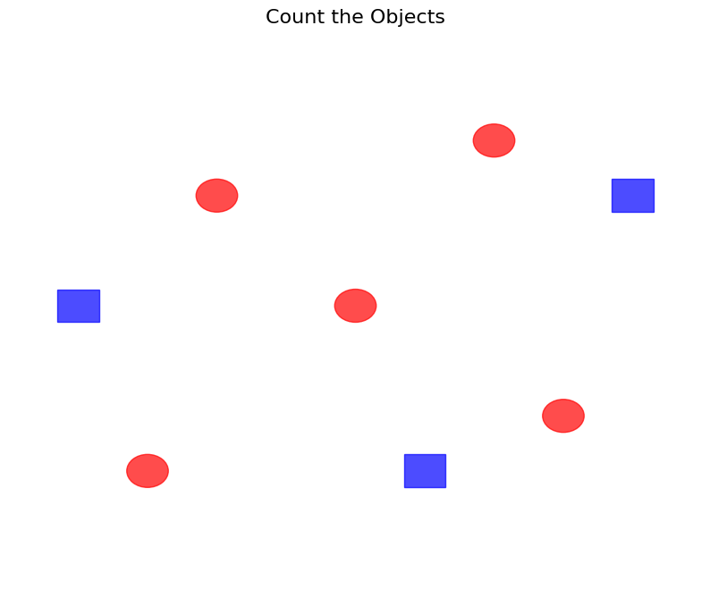
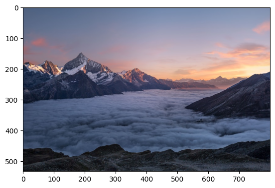
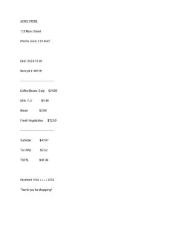
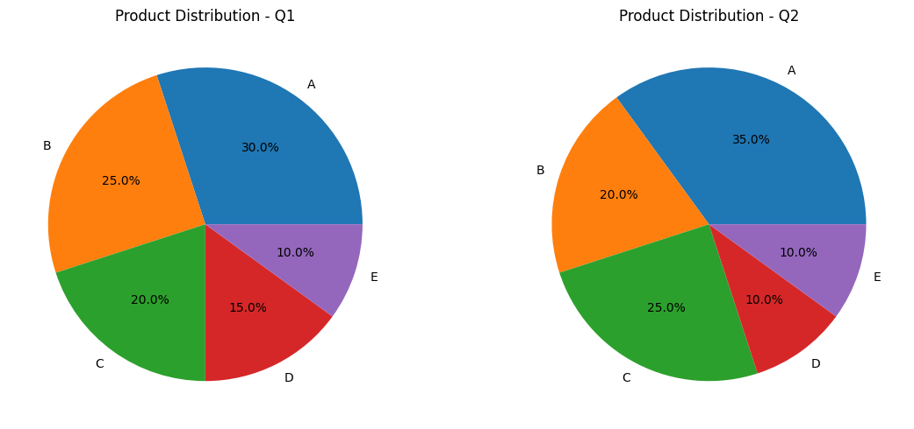
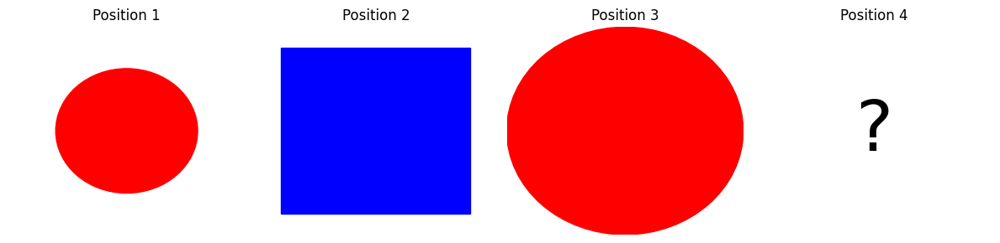
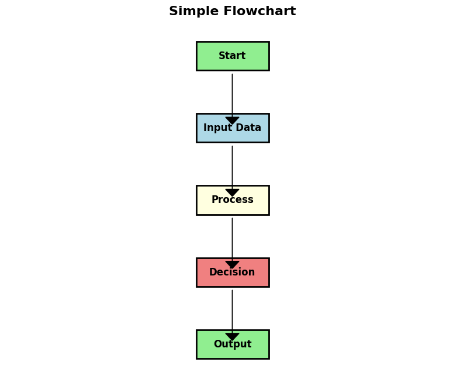

# Install required packages# !pip install google-genai pillow requests matplotlib pandas numpy—title: “Gemini 3 Pro: Complete Guide to Multimodal AI”author: “Nipun Batra”date: “2025-12-01”categories: [LLM, Gemini, multimodal, vision, audio, video]format: html: code-fold: false toc: true toc-depth: 3—
IntroductionThis comprehensive notebook demonstrates all capabilities of Gemini 3 Pro - Google’s most advanced multimodal AI model.## What You’ll Learn### API Fundamentals- Single vs batch processing- Streaming responses- Context caching- Error handling### Text Modality (10 tasks)1. Zero-shot sentiment analysis2. Few-shot classification3. Named Entity Recognition4. Text summarization5. Question answering6. Translation7. Text completion8. Entity extraction9. Keyword extraction10. Text rewriting### Vision Modality (8 tasks)11. Object counting12. Visual QA13. Chart analysis14. Document OCR15. Image captioning16. Multi-image comparison17. Visual reasoning18. Diagram understanding### Video Modality (3 tasks)19. Video understanding20. Frame-by-frame analysis21. Action recognition### Audio Modality (2 tasks)22. Speech transcription23. Audio content analysis### PDF Modality (2 tasks)24. PDF document analysis25. Multi-page extraction### Advanced Features (10 tasks)26. Structured JSON output27. Function calling28. Code execution29. Search grounding30. Chain-of-thought (Thinking mode)31. Long context (1M tokens)32. Code generation33. Mathematical reasoning34. Scientific reasoning35. Creative writing## Model SpecificationsModel: gemini-2.0-flash-thinking-exp-1219- Input modalities: Text, Image, Video, Audio, PDF- Output: Text only- Context: 1,048,576 tokens input / 65,536 tokens output- Knowledge cutoff: January 2025- Special features: Thinking mode, Code execution, Context caching
Setup and Configuration
import osimport jsonimport timefrom pathlib import Pathfrom typing import List, Dict, Anyfrom google import genaifrom PIL import Image, ImageDraw, ImageFontimport requestsfrom io import BytesIOimport base64import matplotlib.pyplot as pltimport numpy as np# Check for API keyif 'GEMINI_API_KEY' not in os.environ: raise ValueError( "GEMINI_API_KEY not found in environment.\n" "Set it with: export GEMINI_API_KEY='your-key'\n" "Get your key at: https://aistudio.google.com/apikey" )# Initialize client (new SDK)client = genai.Client(api_key=os.environ['GEMINI_API_KEY'])print(" Gemini client initialized successfully")print("Using google-genai SDK (new version)")# Note: We'll use gemini-2.0-flash-thinking-exp-1219 as the default modelMODEL = "gemini-2.0-flash-thinking-exp-1219"print(f"Default model: {MODEL}")✅ Gemini client initialized successfully
Using google-genai SDK (new version)
Default model: gemini-2.0-flash-thinking-exp-1219Helper Functions
def print_section(title: str): """Print formatted section header.""" print("\n" + "="*80) print(title) print("="*80)def print_result(label: str, content: str, indent: int = 0): """Print formatted result.""" prefix = " " * indent print(f"{prefix}{label}: {content}")def load_image_from_url(url: str) -> Image.Image: """Load an image from a URL.""" response = requests.get(url) return Image.open(BytesIO(response.content))def create_sample_image(text: str, size=(800, 600)) -> Image.Image: """Create a simple image with text for testing.""" img = Image.new('RGB', size, color='white') draw = ImageDraw.Draw(img) draw.text((50, size[1]//2), text, fill='black') return imgprint("Helper functions loaded")Helper functions loadedPart 1: API Usage Patterns## Single Request vs Batch Processing
print("" + "="*80)print("Single Request")print("="*80)# Single request - simplest wayresponse = client.models.generate_content( model="gemini-3-pro-preview", contents="What is the capital of France?")print_result("Question", "What is the capital of France?")print_result("Answer", response.text)
================================================================================
TASK 0A: Single Request
================================================================================
Question: What is the capital of France?
Answer: The capital of France is **Paris**.print("" + "="*80)print("Batch Processing")print("="*80)# Process multiple prompts efficientlyprompts = [ "Translate 'Hello' to Spanish", "Translate 'Goodbye' to French", "Translate 'Thank you' to German", "Translate 'Welcome' to Italian"]# Method 1: Sequential (simple but slower)print("Sequential processing:")start = time.time()results_seq = []for prompt in prompts: response = client.models.generate_content( model="gemini-2.0-flash-thinking-exp-1219", contents=prompt) results_seq.append(response.text.strip())time_seq = time.time() - startfor i, (prompt, result) in enumerate(zip(prompts, results_seq), 1): print(f" {i}. {prompt} → {result}")print(f"Time: {time_seq:.2f}s")
================================================================================
TASK 0B: Batch Processing
================================================================================
Sequential processing:
1. Translate 'Hello' to Spanish → The most common way to say "Hello" in Spanish is:
**Hola**
2. Translate 'Goodbye' to French → The most common translation for "Goodbye" in French is:
**Au revoir**
You might also hear:
* **Adieu** (more definitive, often implies "farewell forever," though sometimes used in literature for a simple "goodbye")
* **Salut** (informal, used for both "hi" and "bye")
* **À bientôt** (See you soon)
* **À tout à l'heure** (See you later today)
* **À demain** (See you tomorrow)
* **Bonne journée** (Have a good day)
* **Bonne soirée** (Have a good evening)
* **Bonne nuit** (Good night)
3. Translate 'Thank you' to German → The most common ways to say "Thank you" in German are:
1. **Danke** (Most common, general, can be informal but also widely accepted in formal settings)
2. **Danke schön** (Slightly more polite or appreciative than just "Danke")
Other options, expressing stronger gratitude:
* **Vielen Dank** (Thank you very much / Many thanks)
* **Herzlichen Dank** (Heartfelt thanks)
4. Translate 'Welcome' to Italian → The most common translation of 'Welcome' to Italian is **Benvenuto**.
* **Benvenuto** (singular, masculine, to a man or when the gender is unknown)
* **Benvenuta** (singular, feminine, to a woman)
* **Benvenuti** (plural, masculine, to a group of men or a mixed group)
* **Benvenute** (plural, feminine, to a group of women)
Time: 6.22sConfiguration and Safety Settings
print_task("0C", "Streaming Responses")# Stream responses for long-running tasksprompt = """Write a detailed explanation of how neural networks work,covering architecture, training process, and applications."""print("Streaming response (token by token):\n")response = client.models.generate_content_stream( model="gemini-2.0-flash-thinking-exp-1219", contents=prompt)for chunk in response: if chunk.text: print(chunk.text, end='', flush=True)print("\n\nStreaming complete!")
================================================================================
TASK 0C: Streaming Responses
================================================================================
Streaming response (token by token):
Neural networks are a subset of machine learning, inspired by the structure and function of the human brain. They are powerful tools capable of learning complex patterns and relationships within data, enabling them to perform tasks like image recognition, natural language processing, and prediction with remarkable accuracy.
Let's break down how they work in detail:
---
## 1. The Core Building Block: The Neuron (or Perceptron)
At its heart, a neural network is a collection of interconnected "neurons." A single artificial neuron, also called a **perceptron**, mimics the basic function of a biological neuron:
1. **Inputs (x):** It receives multiple input signals, which are typically numerical values.
2. **Weights (w):** Each input is multiplied by a specific "weight." Weights represent the strength or importance of that input connection. A higher weight means that input has a greater influence on the neuron's output.
3. **Summation:** The weighted inputs are summed together.
* *Mathematical representation:* $\sum (x_i * w_i)$
4. **Bias (b):** A bias term is added to the sum. The bias allows the neuron to activate even if all inputs are zero, or to suppress activation even if inputs are positive. It effectively shifts the activation function curve.
* *Mathematical representation:* $\sum (x_i * w_i) + b$
5. **Activation Function (f):** The sum (plus bias) is then passed through a non-linear activation function. This function determines whether the neuron "fires" or not, and what its output value will be. Without non-linear activation functions, a neural network would simply be a linear model, no matter how many layers it has, severely limiting its ability to learn complex patterns.
Common activation functions include:
* **Sigmoid:** Squashes values between 0 and 1. Good for binary classification output.
* **ReLU (Rectified Linear Unit):** Outputs the input directly if positive, otherwise outputs zero. $f(x) = \max(0, x)$. Widely popular due to its computational efficiency and ability to mitigate vanishing gradients.
* **Tanh (Hyperbolic Tangent):** Squashes values between -1 and 1.
* **Softmax:** Used in the output layer for multi-class classification, converting a vector of numbers into a probability distribution.
**The output of a single neuron** is therefore: $y = f(\sum (x_i * w_i) + b)$.
---
## 2. Network Architecture: Layers and Connections
A single neuron is limited, but connecting many neurons together in layers creates a powerful network.
### 2.1. Layers
Neural networks are typically organized into layers:
1. **Input Layer:**
* This layer receives the raw data.
* Each neuron in the input layer corresponds to a feature in the dataset (e.g., a pixel value in an image, a word count in a text).
* It doesn't perform any computation, only passes the input values to the next layer.
2. **Hidden Layers:**
* These layers are where the "magic" happens. They are called "hidden" because they are not directly exposed to the input or output.
* Each neuron in a hidden layer receives inputs from all neurons in the *previous* layer, performs its weighted sum and activation, and then passes its output to all neurons in the *next* layer.
* Hidden layers learn increasingly abstract and complex representations (features) of the input data. For example, in an image, the first hidden layer might detect edges, the second might combine edges into shapes, and subsequent layers might recognize parts of objects or full objects.
* A network with more than one hidden layer is called a **Deep Neural Network (DNN)**. The "depth" of the network is a key factor in its ability to learn complex representations.
3. **Output Layer:**
* This layer produces the final result of the network.
* The number of neurons in the output layer depends on the task:
* **Regression:** One neuron (e.g., predicting house prices).
* **Binary Classification:** One neuron (e.g., yes/no, spam/not spam) often with a sigmoid activation.
* **Multi-class Classification:** One neuron for each class (e.g., identifying digits 0-9) often with a softmax activation to produce probabilities for each class.
### 2.2. Connections
* **Feedforward:** In a typical feedforward neural network (like a Multi-Layer Perceptron, or MLP), information flows in only one direction: from the input layer, through the hidden layers, and finally to the output layer. There are no loops or backward connections within the information processing flow.
---
## 3. The Training Process: How Neural Networks Learn
The real power of neural networks comes from their ability to **learn** from data. Learning means adjusting the **weights** and **biases** within the network so that it can accurately map inputs to desired outputs. This is an iterative process:
### 3.1. Data Preparation
* **Training Data:** The largest portion of the dataset used to train the model (adjust weights and biases).
* **Validation Data:** A separate portion used to tune hyperparameters and prevent overfitting during training.
* **Test Data:** A completely unseen portion used to evaluate the final performance of the trained model.
* **Preprocessing:** Data is often scaled (e.g., normalization, standardization) and preprocessed (e.g., converting categorical data to numerical) to optimize learning.
### 3.2. Forward Propagation (Making a Prediction)
1. An input (e.g., an image) is fed into the input layer.
2. It travels through each layer, with each neuron performing its weighted sum, bias addition, and activation function.
3. Eventually, the output layer produces a prediction (e.g., "this is a cat," or "the house price is $300,000").
### 3.3. Loss Function (Quantifying Error)
* After the network makes a prediction, it needs to know how good or bad that prediction was. A **loss function** (or cost function) calculates the difference between the network's prediction and the actual true value (the "ground truth").
* The goal of training is to **minimize this loss**.
Common loss functions:
* **Mean Squared Error (MSE):** For regression tasks. Calculates the average of the squared differences between predicted and actual values.
* **Cross-Entropy Loss:** For classification tasks. Measures the performance of a classification model whose output is a probability value between 0 and 1.
### 3.4. Backpropagation (Adjusting Weights and Biases)
This is the core algorithm for training neural networks and is essentially an application of the **chain rule from calculus**.
1. **Calculate the Gradient:** Starting from the output layer and moving backward through the network, backpropagation calculates the **gradient** of the loss function with respect to each weight and bias in the network. The gradient indicates the direction and magnitude of the steepest increase in the loss function.
* Think of it like being on a mountain (the loss landscape) and trying to find the quickest way down (minimize loss). The gradient tells you which way is downhill.
2. **Update Weights and Biases (Gradient Descent):** Once the gradients are known, the weights and biases are updated in the opposite direction of their respective gradients, scaled by a **learning rate**.
* **Learning Rate:** A crucial hyperparameter that determines the size of the steps taken down the gradient.
* Too high: Might overshoot the minimum or oscillate.
* Too low: Might take too long to converge or get stuck in local minima.
* **Optimization Algorithms:** Variations of gradient descent (e.g., Stochastic Gradient Descent (SGD), Adam, RMSprop) are used to make the weight updates more efficient and effective, helping to navigate complex loss landscapes.
This entire process (forward propagation, calculating loss, backpropagation, and updating weights) is repeated many times over the training data.
### 3.5. Training Iterations
* **Epoch:** One complete pass through the entire training dataset.
* **Batch:** The training data is often divided into smaller batches. Weights are updated after processing each batch, rather than after processing the entire dataset. This speeds up training and provides a more stable gradient estimate.
### 3.6. Overfitting and Underfitting
* **Overfitting:** Occurs when the network learns the training data too well, memorizing noise and specific examples rather than general patterns. It performs poorly on unseen data.
* *Mitigation:* Regularization (L1, L2), dropout, early stopping, more training data.
* **Underfitting:** Occurs when the network is too simple to capture the underlying patterns in the data. It performs poorly on both training and unseen data.
* *Mitigation:* More complex model (more layers/neurons), longer training, better features.
---
## 4. Key Concepts and Components
* **Parameters:** These are the internal variables of the model that are learned from the data – primarily the **weights** and **biases**.
* **Hyperparameters:** These are external configurations set *before* training begins and are not learned by the model. Examples include the learning rate, number of hidden layers, number of neurons per layer, choice of activation function, batch size, and number of epochs. They are often tuned using validation data.
* **Deep Learning:** Refers to neural networks with many hidden layers (i.e., "deep" architectures).
* **Specialized Architectures:** Beyond basic feedforward networks, there are specialized architectures designed for specific types of data and problems:
* **Convolutional Neural Networks (CNNs):** Excellent for image and video processing. They use convolutional layers (filters that detect local patterns) and pooling layers (downsampling) to extract spatial hierarchies of features.
* **Recurrent Neural Networks (RNNs):** Designed for sequential data (time series, text). They have "memory" because their output at one step depends on previous inputs and states. Long Short-Term Memory (LSTM) and Gated Recurrent Unit (GRU) networks are advanced types of RNNs that mitigate the vanishing gradient problem.
* **Transformers:** Revolutionized NLP. They use an "attention mechanism" to weigh the importance of different parts of the input sequence, allowing for highly parallel processing and capturing long-range dependencies more effectively than RNNs.
* **Generative Adversarial Networks (GANs):** Consist of two competing networks (a Generator and a Discriminator) that learn to generate realistic new data (images, audio, etc.).
---
## 5. Applications of Neural Networks
The versatility and power of neural networks have led to breakthroughs across numerous fields:
* **Computer Vision:**
* Image Recognition/Classification (identifying objects, faces, scenes)
* Object Detection (locating objects within an image)
* Image Segmentation (labeling each pixel in an image)
* Facial Recognition
* Autonomous Driving (scene understanding)
* Medical Image Analysis (detecting diseases from X-rays, MRIs)
* Image Generation (DeepFakes, art generation)
* **Natural Language Processing (NLP):**
* Machine Translation (Google Translate)
* Sentiment Analysis (determining emotional tone of text)
* Text Generation (writing articles, creative content)
* Chatbots and Virtual Assistants (Siri, Alexa)
* Spam Detection
* Named Entity Recognition
* **Speech Recognition:**
* Converting spoken language into text (transcription)
* Voice Control systems
* **Recommendation Systems:**
* Suggesting products (Amazon), movies (Netflix), music (Spotify) based on user preferences and past behavior.
* **Healthcare:**
* Disease Diagnosis and Prediction
* Drug Discovery
* Personalized Treatment Plans
* **Finance:**
* Fraud Detection
* Algorithmic Trading
* Credit Scoring
* Risk Assessment
* **Robotics:**
* Learning complex motor control
* Object manipulation and navigation
* **Gaming:**
* Developing advanced AI opponents
* Procedural content generation
---
## Conclusion
Neural networks are complex systems that, at their core, learn to map inputs to outputs by iteratively adjusting internal weights and biases. Their layered architecture allows them to build hierarchical representations of data, while the backpropagation algorithm efficiently guides the learning process by minimizing error. With advancements in computational power, vast datasets, and innovative architectures, neural networks continue to push the boundaries of artificial intelligence, transforming industries and solving problems previously thought intractable.
Streaming complete!Part 2: Text-Only Tasks (10 tasks)
print("" + "="*80)print("Zero-Shot Sentiment Analysis")print("="*80)texts = [ "This product is absolutely amazing! Best purchase I've made all year.", "Terrible experience. Waste of money and time.", "It's okay. Nothing special but does the job.", "I'm disappointed with the quality. Expected much better.", "Exceeded all my expectations! Highly recommend!"]prompt_template = """Classify the sentiment: Positive, Negative, or Neutral.Reply with ONLY the sentiment label.Text: {text}Sentiment:"""for i, text in enumerate(texts, 1): response = client.models.generate_content( model="gemini-2.0-flash-thinking-exp-1219", contents=prompt_template.format(text=text) ) sentiment = response.text.strip() print(f"{i}. '{text[:50]}...'") print(f" → {sentiment}\n")
================================================================================
TASK 1: Zero-Shot Sentiment Analysis
================================================================================
1. 'This product is absolutely amazing! Best purchase ...'
→ Positive
2. 'Terrible experience. Waste of money and time....'
→ Negative
3. 'It's okay. Nothing special but does the job....'
→ Neutral
4. 'I'm disappointed with the quality. Expected much b...'
→ Negative
5. 'Exceeded all my expectations! Highly recommend!...'
→ Positive
Few-Shot Text Classification
print("" + "="*80)print("Few-Shot Text Classification")print("="*80)# Intent classification with examplesprompt = """Classify customer service queries into categories.Examples:"How do I reset my password?" → Technical Support"I was charged twice" → Billing"What are your hours?" → General Inquiry"This is broken" → Complaint"I want to cancel" → Account ManagementQuery: "{query}"Category:"""test_queries = [ "My app keeps crashing when I upload photos", "Why was I charged for premium when I'm on free plan?", "Do you ship to Canada?", "The product arrived damaged", "How do I delete my account?"]for query in test_queries: response = client.models.generate_content( model="gemini-2.0-flash-thinking-exp-1219", contents=prompt.format(query=query) ) print(f"Query: {query}") print(f"Category: {response.text.strip()}\n")
================================================================================
TASK 2: Few-Shot Text Classification
================================================================================
Query: My app keeps crashing when I upload photos
Category: Technical Support
Query: Why was I charged for premium when I'm on free plan?
Category: Category: Billing
Query: Do you ship to Canada?
Category: Category: General Inquiry
Query: The product arrived damaged
Category: Complaint
Query: How do I delete my account?
Category: Account Management
Named Entity Recognition
print("" + "="*80)print("Named Entity Recognition (NER)")print("="*80)text = """Apple Inc. CEO Tim Cook announced a $500 million investment in renewable energy projects across California next month. The announcement was made at the company's headquarters in Cupertino on December 15, 2024."""prompt = f"""Extract all named entities and categorize them:PERSON, ORGANIZATION, LOCATION, MONEY, DATEText: {text}Format as JSON with entity type as key."""response = client.models.generate_content( model="gemini-2.0-flash-thinking-exp-1219", contents=prompt)print(f"Text: {text}\n")print("Entities:")print(response.text)
================================================================================
TASK 3: Named Entity Recognition (NER)
================================================================================
Text: Apple Inc. CEO Tim Cook announced a $500 million investment in renewable
energy projects across California next month. The announcement was made at the
company's headquarters in Cupertino on December 15, 2024.
Entities:
```json
{
"PERSON": [
"Tim Cook"
],
"ORGANIZATION": [
"Apple Inc."
],
"LOCATION": [
"California",
"Cupertino"
],
"MONEY": [
"$500 million"
],
"DATE": [
"December 15, 2024"
]
}
```Text Summarization
print("" + "="*80)print("Text Summarization")print("="*80)article = """Artificial intelligence continues to transform industries worldwide. Recentadvances in large language models have enabled more natural conversations between humansand machines. These models can understand context, generate coherent text, and evenperform complex reasoning tasks. However, challenges remain in ensuring factual accuracy,reducing computational costs, and addressing ethical concerns around bias and privacy.Researchers are actively working on making AI more efficient, transparent, and alignedwith human values. The field is evolving rapidly, with new breakthroughs announced weekly.From healthcare to education, AI is reshaping how we work and live."""prompts = [ "Summarize in 1 sentence:", "Summarize in 3 bullet points:", "Create a tweet-length summary (280 chars):"]print(f"Original ({len(article)} chars):\n{article}\n")for prompt_type in prompts: response = client.models.generate_content( model="gemini-2.0-flash-thinking-exp-1219", contents=f"{prompt_type}\n\n{article}" ) print(f"{prompt_type}") print(f" {response.text.strip()}\n")
================================================================================
TASK 4: Text Summarization
================================================================================
Original (671 chars):
Artificial intelligence continues to transform industries worldwide. Recent
advances in large language models have enabled more natural conversations between humans
and machines. These models can understand context, generate coherent text, and even
perform complex reasoning tasks. However, challenges remain in ensuring factual accuracy,
reducing computational costs, and addressing ethical concerns around bias and privacy.
Researchers are actively working on making AI more efficient, transparent, and aligned
with human values. The field is evolving rapidly, with new breakthroughs announced weekly.
From healthcare to education, AI is reshaping how we work and live.
Summarize in 1 sentence:
Driven by advancements in large language models, artificial intelligence is rapidly transforming industries and human-machine interaction worldwide, despite ongoing challenges in accuracy, cost, and ethics.
Summarize in 3 bullet points:
Here's a three-bullet point summary:
* Artificial intelligence, especially large language models, is transforming industries by enabling natural human-machine interactions and complex reasoning.
* Key challenges remain in ensuring factual accuracy, reducing computational costs, and addressing ethical concerns like bias and privacy.
* Researchers are actively working to make AI more efficient, transparent, and aligned with human values in this rapidly evolving field.
Create a tweet-length summary (280 chars):
AI is reshaping industries! LLMs enable natural human-machine conversations & reasoning, but face hurdles: factual accuracy, high costs, & ethical issues (bias, privacy). Researchers are building more efficient, transparent, human-aligned AI as the field rapidly evolves.
Question Answering with Context
print("" + "="*80)print("Question Answering")print("="*80)context = """The Eiffel Tower is a wrought-iron lattice tower located on the Champ de Marsin Paris, France. It was constructed from 1887 to 1889 as the centerpiece of the 1889World's Fair. The tower is 330 meters (1,083 feet) tall, about the same height as an81-story building. It was the tallest man-made structure in the world until the ChryslerBuilding was completed in New York in 1930."""questions = [ "When was the Eiffel Tower built?", "How tall is the Eiffel Tower?", "Where is it located?", "What material is it made of?", "When did it stop being the tallest structure?"]print(f"Context: {context}\n")for q in questions: prompt = f"Context: {context}\n\nQuestion: {q}\nAnswer (concise):" response = client.models.generate_content( model="gemini-2.0-flash-thinking-exp-1219", contents=prompt ) print(f"Q: {q}") print(f"A: {response.text.strip()}\n")
================================================================================
TASK 5: Question Answering
================================================================================
Context: The Eiffel Tower is a wrought-iron lattice tower located on the Champ de Mars
in Paris, France. It was constructed from 1887 to 1889 as the centerpiece of the 1889
World's Fair. The tower is 330 meters (1,083 feet) tall, about the same height as an
81-story building. It was the tallest man-made structure in the world until the Chrysler
Building was completed in New York in 1930.
Q: When was the Eiffel Tower built?
A: 1887 to 1889
Q: How tall is the Eiffel Tower?
A: 330 meters (1,083 feet)
Q: Where is it located?
A: On the Champ de Mars in Paris, France.
Q: What material is it made of?
A: Wrought-iron
Q: When did it stop being the tallest structure?
A: 1930
Translation
print("" + "="*80)print("Multi-Language Translation")print("="*80)text = "Artificial intelligence is changing the world."languages = ["Spanish", "French", "German", "Japanese", "Hindi", "Arabic"]print(f"Original (English): {text}\n")for lang in languages: prompt = f"Translate to {lang}: {text}" response = client.models.generate_content( model="gemini-2.0-flash-thinking-exp-1219", contents=prompt ) print(f"{lang}: {response.text.strip()}")
================================================================================
TASK 6: Multi-Language Translation
================================================================================
Original (English): Artificial intelligence is changing the world.
Spanish: **La inteligencia artificial está cambiando el mundo.**
French: **L'intelligence artificielle change le monde.**
German: **Künstliche Intelligenz verändert die Welt.**
Japanese: 人工知能は世界を変えています。
(Jinkō chinō wa sekai o kaete imasu.)
**More nuanced options:**
* **Emphasizing a gradual, ongoing process:**
人工知能は世界を変えつつあります。
(Jinkō chinō wa sekai o kaetsutsu arimasu.)
*This implies the change is currently happening and will continue.*
* **Emphasizing a transformative or revolutionary change:**
人工知能は世界を変革しています。
(Jinkō chinō wa sekai o henkaku shite imasu.)
*「変革 (henkaku)」 means transformation or reform, often implying a more profound change.*
Hindi: Here are a couple of ways to translate "Artificial intelligence is changing the world" into Hindi, both are commonly used and accurate:
1. **कृत्रिम बुद्धिमत्ता दुनिया बदल रही है।**
* (Kritrim Buddhimatta duniya badal rahi hai.)
2. **कृत्रिम बुद्धिमत्ता दुनिया को बदल रही है।**
* (Kritrim Buddhimatta duniya ko badal rahi hai.)
The second option adds 'को' (ko) which functions somewhat like a direct object marker, making it slightly more emphatic that the world is the *object* being changed, but both are grammatically correct and convey the same meaning. The first one is a bit more direct and often used in general conversation.
Arabic: **الذكاء الاصطناعي يغير العالم.**Text Completion
print("" + "="*80)print("Text Completion")print("="*80)prompts = [ "The secret to happiness is", "In the year 2050, technology will", "The most important skill for the future is"]for prompt in prompts: response = client.models.generate_content( model="gemini-2.0-flash-thinking-exp-1219", contents=f"Complete this sentence in 1-2 sentences: {prompt}" ) print(f"Prompt: '{prompt}'") print(f"Completion: {response.text.strip()}\n")
================================================================================
TASK 7: Text Completion
================================================================================
Prompt: 'The secret to happiness is'
Completion: The secret to happiness is **not a destination to be reached, but a journey of perspective and gratitude**. It's found in embracing the present moment, fostering meaningful connections, and cultivating contentment with what you have rather than constantly chasing what you lack.
Prompt: 'In the year 2050, technology will'
Completion: In the year 2050, technology will be largely invisible yet profoundly influential, with advanced AI seamlessly anticipating needs and automating complex tasks across all sectors. This pervasive integration will revolutionize everything from personalized healthcare and autonomous transportation to our interaction with smart environments, making daily life remarkably efficient and interconnected.
Prompt: 'The most important skill for the future is'
Completion: The most important skill for the future is **adaptability**. As technology accelerates and industries transform, the ability to continuously learn, unlearn, and pivot will be paramount for navigating an ever-changing landscape and thriving amidst uncertainty.
Entity Extraction
print("" + "="*80)print("Structured Entity Extraction")print("="*80)resume = """JOHN DOEjohn.doe@email.com | (555) 123-4567 | linkedin.com/in/johndoeEXPERIENCESenior Software Engineer, TechCorp (2020-Present)- Led team of 5 engineers in developing cloud infrastructure- Expertise: Python, AWS, Docker, KubernetesEDUCATIONM.S. Computer Science, Stanford University (2018)B.S. Computer Science, MIT (2016)"""prompt = f"""Extract key information as JSON:{{ "name": "", "email": "", "phone": "", "current_role": "", "company": "", "skills": [], "education": []}}Resume:{resume}Return only valid JSON:"""response = client.models.generate_content( model="gemini-2.0-flash-thinking-exp-1219", contents=prompt)print("Extracted data:")print(response.text)
================================================================================
TASK 8: Structured Entity Extraction
================================================================================
Extracted data:
```json
{
"name": "JOHN DOE",
"email": "john.doe@email.com",
"phone": "(555) 123-4567",
"current_role": "Senior Software Engineer",
"company": "TechCorp",
"skills": [
"Python",
"AWS",
"Docker",
"Kubernetes"
],
"education": [
"M.S. Computer Science, Stanford University (2018)",
"B.S. Computer Science, MIT (2016)"
]
}
```Keyword Extraction
print("" + "="*80)print("Keyword Extraction")print("="*80)text = """Machine learning and deep learning are subsets of artificial intelligence that focus on training algorithms to recognize patterns in data. Neural networks, inspired by biological neurons, form the basis of deep learning systems. These technologies power applications like computer vision, natural language processing, and autonomous vehicles."""prompt = f"""Extract the 5 most important keywords from this text.Return as a comma-separated list.Text: {text}Keywords:"""response = client.models.generate_content( model="gemini-2.0-flash-thinking-exp-1219", contents=prompt)print(f"Text: {text}\n")print(f"Keywords: {response.text.strip()}")
================================================================================
TASK 9: Keyword Extraction
================================================================================
Text: Machine learning and deep learning are subsets of artificial intelligence
that focus on training algorithms to recognize patterns in data. Neural networks,
inspired by biological neurons, form the basis of deep learning systems. These
technologies power applications like computer vision, natural language processing,
and autonomous vehicles.
Keywords: Artificial Intelligence, Machine Learning, Deep Learning, Neural Networks, Computer VisionText Rewriting
print("" + "="*80)print("Text Rewriting for Different Audiences")print("="*80)original = """The algorithm leverages advanced neural architectures to optimizemulti-dimensional parameter spaces through stochastic gradient descent."""audiences = [ "Explain to a 10-year-old", "Rewrite for a business executive", "Simplify for general audience", "Make it poetic"]print(f"Original: {original}\n")for audience in audiences: response = client.models.generate_content( model="gemini-2.0-flash-thinking-exp-1219", contents=f"{audience}:\n\n{original}" ) print(f"{audience}:") print(f" {response.text.strip()}\n")
================================================================================
TASK 10: Text Rewriting for Different Audiences
================================================================================
Original: The algorithm leverages advanced neural architectures to optimize
multi-dimensional parameter spaces through stochastic gradient descent.
Explain to a 10-year-old:
Okay, imagine you have a very smart robot that needs to learn how to do something perfectly – like playing a video game really, really well, or figuring out the best way to sort a giant pile of toys.
Let's break down that big sentence:
1. **"The algorithm"**: This is just the robot's special plan or recipe for how it's going to learn and do things. It's a set of instructions.
2. **"leverages advanced neural architectures"**: This means the robot uses a special "brain" inside it. This computer brain isn't like a human brain, but it's *inspired* by how our brains work, with lots of tiny connections. It's really good at learning from examples, kind of like how you learn by practicing.
3. **"to optimize"**: This simply means the robot wants to find the *best possible way* to do something. It wants to make it work perfectly, or as good as it can get.
4. **"multi-dimensional parameter spaces"**: Imagine our robot is playing a game, and there are TONS of different settings it can change – like the character's speed, the jump height, the weapon power, the color of its outfit, how quickly it reacts, and hundreds more! Each of these settings is a "parameter." "Multi-dimensional parameter spaces" just means there are *many, many* of these settings, and the robot needs to find the *perfect combination* for all of them at once. It's like having a giant control panel with a thousand different knobs and dials, and the robot needs to set every single one just right.
5. **"through stochastic gradient descent"**: This is how the robot actually *finds* those perfect settings. Imagine you're blindfolded on a very bumpy hill, and you want to find the lowest point (that's like finding the "best" settings). You can't see the whole hill.
* You take a small step. If you went downhill, great! You take another step in that general direction.
* If you went uphill, oops! You turn around and try a different direction.
* "Stochastic" means it doesn't try to figure out the *perfect* direction every time, because that would take too long. Instead, it takes a *quick look* at just a small part of the hill around it (like feeling the ground right under your feet), guesses which way is down, and takes a small step. It might not always be the *absolute best* step, but by taking many, many small, smart guesses, it slowly but surely makes its way down to the lowest point.
**So, putting it all together for you:**
It means a very smart computer program, using a special "brain-like" way of thinking, is trying to find the absolute *best* way to do something. It does this by figuring out the perfect settings (like a thousand different game controls) through a method of taking many tiny, educated guesses, slowly moving towards what works best, just like you'd carefully feel your way down a bumpy hill.
Rewrite for a business executive:
Here are a few options, depending on the specific nuance you want to convey:
**Option 1 (Most Direct & Concise):**
"Our advanced AI efficiently optimizes complex variables to achieve the best possible results."
**Option 2 (Emphasizing Efficiency and Performance):**
"This AI-driven approach efficiently finds the best configuration across many variables, significantly boosting performance."
**Option 3 (Focusing on Problem Solving):**
"Our advanced AI quickly identifies and implements the optimal solutions for complex, multi-faceted problems."
**Option 4 (Slightly More Detail, Still Executive-Friendly):**
"Leveraging advanced AI, the system continuously refines its approach to pinpoint the most effective settings across a wide range of variables."
Simplify for general audience:
Here are a few ways to simplify that, depending on how much detail you want to retain:
**Option 1 (Very Simple):**
"It's a very smart computer program, designed like a simplified brain, that figures out the best way to adjust many different settings by making small, step-by-step improvements."
**Option 2 (Slightly More Detail):**
"This program uses advanced, brain-inspired computer designs to find the perfect combination of many different variables. It does this by making small, educated guesses and adjustments, gradually improving until it finds the ideal solution."
**Option 3 (Using an Analogy):**
"Think of it like a very clever apprentice, trained with a brain-like system. It's trying to perfectly tune hundreds of tiny knobs and dials to get the best possible result. It learns by making small tweaks to those knobs, seeing what works, and slowly, surely, getting closer to the perfect setup."
---
**Breakdown of the Simplification:**
* **"The algorithm leverages advanced neural architectures"**
* Becomes: "It's a very smart computer program, designed like a simplified brain," or "This program uses advanced, brain-inspired computer designs."
* **"to optimize multi-dimensional parameter spaces"**
* Becomes: "to figure out the best way to adjust many different settings," or "to find the perfect combination of many different variables."
* **"through stochastic gradient descent."**
* Becomes: "by making small, step-by-step improvements," or "by making small, educated guesses and adjustments, gradually improving."
Make it poetic:
The silent weaver, born of electric thought,
Through neural depths, its intricate design is wrought.
It seeks perfection's form, the truest line to find,
Across vast, multi-veiled realms, where countless pathways bind.
With stochastic grace, a guided, gentle fall,
It threads the winding slopes, responsive to the call
Of ultimate alignment, where all true forms reside.
Part 3: Vision Tasks (8 tasks)## Object Counting
print("" + "="*80)print("Object Counting in Images")print("="*80)# Create a test image with multiple objectsfig, ax = plt.subplots(figsize=(10, 8))ax.set_xlim(0, 10)ax.set_ylim(0, 10)ax.axis('off')# Draw different shapescircles = [(2, 2), (5, 5), (8, 3), (3, 7), (7, 8)]squares_x = [1, 6, 9]squares_y = [5, 2, 7]for x, y in circles: circle = plt.Circle((x, y), 0.3, color='red', alpha=0.7) ax.add_patch(circle)from matplotlib.patches import Rectanglefor x, y in zip(squares_x, squares_y): square = Rectangle((x-0.3, y-0.3), 0.6, 0.6, color='blue', alpha=0.7) ax.add_patch(square)plt.title('Count the Objects', fontsize=16)plt.savefig('/tmp/objects.png', dpi=150, bbox_inches='tight')
================================================================================
TASK 11: Object Counting in Images
================================================================================
plt.close()image = Image.open('/tmp/objects.png')prompt = """Count the objects in this image:1. How many red circles?2. How many blue squares?3. Total number of objects?"""response = client.models.generate_content( model="gemini-2.0-flash-thinking-exp-1219", contents=[prompt, image])print(response.text)Here are the counts for the objects in the image:
1. **How many red circles?** 5
2. **How many blue squares?** 2
3. **Total number of objects?** 7Visual Question Answering (VQA)
print("" + "="*80)print("Visual Question Answering")print("="*80)# Use sample images from URLstry: image_url = "https://images.unsplash.com/photo-1506905925346-21bda4d32df4?w=800" image = load_image_from_url(image_url) # Show image plt.imshow(image) questions = [ "What is the dominant color in this image?", "Describe the scenery", "What time of day does it appear to be?", "What mood does this image convey?" ] for q in questions: response = client.models.generate_content( model="gemini-2.0-flash-thinking-exp-1219", contents=[q, image] ) print(f"Q: {q}") print(f"A: {response.text.strip()}\n")except Exception as e: print(f"Note: Image loading requires internet. Error: {str(e)[:100]}")
================================================================================
TASK 12: Visual Question Answering
================================================================================
Q: What is the dominant color in this image?
A: The dominant color in this image is a **desaturated blue** or **blue-grey**.
This hue is prominent in:
* The large expanse of sky, particularly on the left side.
* The vast sea of clouds/fog filling the valley.
* The distant mountains, which appear bluer due to atmospheric perspective.
While there are touches of orange/pink in the sunset sky and white on the snow-capped peaks, the cool, muted blue tones cover the largest area of the image.
Q: Describe the scenery
A: This breathtaking scenery captures a majestic mountain landscape at either sunrise or sunset, viewed from a high vantage point above a vast sea of clouds.
In the immediate foreground, dark, rugged, and somewhat sparse terrain provides a stark contrast to the softness beyond, suggesting a rocky ridge or peak where the viewer is positioned.
Below, the midground is dominated by an expansive "cloud inversion," where a thick, undulating blanket of soft white and pale grey clouds fills the valleys, stretching as far as the eye can see like a tranquil, ethereal ocean. Only the very highest points of the landscape pierce this cloudy expanse.
Rising dramatically from this sea of clouds are a series of jagged, snow-capped mountain peaks. The most prominent peaks, particularly in the center-left, are sharply defined with dark, rocky slopes and bright white snowfields and glaciers. These summits are kissed by the warm, golden-pink light of the low-angle sun, which highlights their textures and casts long, soft shadows. The sun's light also subtly tints the edges of the clouds nearest to the horizon.
The sky above is a gradient of exquisite color, transitioning from a clear, deep blue at the zenith, through soft lavenders and pale purples, to vibrant oranges and rose-pinks near the horizon where the sun is either rising or setting. A few wispy clouds in the upper right corner are also illuminated with these warm, radiant hues.
Overall, the scene evokes a profound sense of peace, grandeur, and isolation, capturing a magical moment high above the ordinary world, bathed in the serene glow of dawn or dusk.
Q: What time of day does it appear to be?
A: Based on the lighting and sky colors, it appears to be either **sunrise** or **sunset**.
Here's why:
* **Warm, low-angle light:** The tops of the mountains and clouds are bathed in soft, warm, golden, and pink light, which is characteristic of the sun being very low on the horizon.
* **Sky gradient:** The sky transitions from a deep blue-purple at the top to vibrant oranges and pinks near the horizon, a signature of the "golden hour."
* **Shadows:** The lower parts of the mountains and the foreground are still largely in shadow or show cooler tones, indicating the sun hasn't risen high yet (sunrise) or has almost set (sunset).
Given the overall crispness and the way the light is just beginning to illuminate the peaks while much of the lower landscape is still cool and in shadow, **sunrise** is a very strong possibility, suggesting the first light of dawn over the mountains. However, without more context or knowing the direction of the sun relative to the peaks, it's difficult to definitively rule out sunset.
Q: What mood does this image convey?
A: This image conveys a profound sense of **awe and serenity**.
Here's a breakdown of the moods it evokes:
1. **Awe and Wonder:** The majestic, snow-capped mountains rising above a vast "sea of clouds" create an incredibly grand and breathtaking spectacle. It inspires a feeling of being tiny in the face of nature's immense scale and beauty.
2. **Serenity and Tranquility:** The soft, warm light of either sunrise or sunset bathes the peaks, and the quiet, still expanse of clouds contribute to a deeply peaceful and calming atmosphere. There's an absence of human activity, emphasizing undisturbed nature.
3. **Dreamlike and Ethereal:** The clouds filling the valleys make the landscape appear otherworldly, like a dreamscape or a scene from a fantasy. It feels light, airy, and slightly mysterious.
4. **Solitude and Remoteness:** The high vantage point and the vast, empty landscape suggest a sense of profound solitude and being far removed from the busy world below.
5. **Hope/Optimism (if sunrise):** The warm, golden and pink hues in the sky can hint at new beginnings and the beauty of a fresh day unfolding.
In essence, it's a mood of **peaceful grandeur and ethereal beauty.**

Chart and Graph Analysis
print("" + "="*80)print("Chart Analysis")print("="*80)# Create a complex chartfig, (ax1, ax2) = plt.subplots(1, 2, figsize=(14, 6))# Bar chartmonths = ['Jan', 'Feb', 'Mar', 'Apr', 'May', 'Jun']sales = [45000, 52000, 48000, 61000, 58000, 72000]ax1.bar(months, sales, color='steelblue')ax1.set_title('Monthly Sales 2024', fontsize=14, fontweight='bold')ax1.set_ylabel('Sales ($)')ax1.grid(axis='y', alpha=0.3)# Line chartdays = list(range(1, 31))visitors = [100 + 50*np.sin(x/5) + np.random.randint(-10, 10) for x in days]ax2.plot(days, visitors, marker='o', linewidth=2, markersize=4)ax2.set_title('Daily Website Visitors', fontsize=14, fontweight='bold')ax2.set_xlabel('Day of Month')ax2.set_ylabel('Visitors')ax2.grid(alpha=0.3)plt.tight_layout()plt.savefig('/tmp/charts.png', dpi=150)
================================================================================
TASK 13: Chart Analysis
================================================================================
plt.close()chart_image = Image.open('/tmp/charts.png')prompt = """Analyze these charts:1. What trends do you see in the sales data?2. Which month had the highest sales?3. What pattern is visible in the website visitors chart?4. Any notable insights?"""response = client.models.generate_content( model="gemini-2.0-flash-thinking-exp-1219", contents=[prompt, chart_image])print(response.text)Here's an analysis of the provided charts:
### Monthly Sales 2024
1. **What trends do you see in the sales data?**
The overall trend in sales data from January to June 2024 is **upward**, showing significant growth over the first half of the year.
* Sales started strong in Jan and Feb, then dipped slightly in March.
* There was a substantial increase in April, followed by another slight dip in May.
* Sales then surged to their highest point in June.
* Despite minor fluctuations (dips in March and May), the general trajectory is positive, with Q2 (April-June) showing stronger performance compared to Q1 (Jan-Mar).
2. **Which month had the highest sales?**
**June** had the highest sales, reaching approximately $72,000.
### Daily Website Visitors
3. **What pattern is visible in the website visitors chart?**
A distinct **cyclical pattern** is visible in the daily website visitors chart within the month:
* Visitors start at a moderate level at the beginning of the month (Day 1-2).
* They quickly **rise to a peak** around Day 7-10 (reaching nearly 160 visitors).
* Following this peak, there's a **sharp and steady decline** throughout the middle of the month.
* Visitors hit a **trough** around Day 20-22 (dropping to around 50-55 visitors).
* Finally, there's a **gradual recovery** in visitor numbers towards the end of the month, though not reaching the early-month peak levels again.
### Notable Insights
4. **Any notable insights?**
* **Strong Sales Growth:** The company experienced significant sales growth over the first six months of 2024, with June being a standout month. This suggests successful strategies are in place or market conditions are favorable.
* **Visitor Volatility:** Website visitor numbers show extreme fluctuations within a single month, ranging from a peak of nearly 160 to a trough of around 50-55. This 3x difference in traffic is quite dramatic.
* **Potential for Optimization:**
* For sales: Investigate what drove the strong performance in April and June, and the reasons for the dips in March and May, to optimize future sales strategies.
* For website visitors: The consistent early-month peak suggests prime opportunities for promotions or new content releases. The mid-month slump indicates a period where user engagement or marketing efforts might be less effective or non-existent, and could be targeted for re-engagement campaigns to smooth out traffic.
* **Correlation (or lack thereof):** Without knowing which specific month the daily visitor data represents, we cannot directly correlate it to the monthly sales figures. However, if this daily visitor pattern is consistent across months, the business might be generating its highest sales from traffic occurring in the first third of the month, or converting those early visitors at a much higher rate. It would be valuable to understand if the peak visitor days correlate with higher daily sales within that month.Document OCR and Understanding
print("" + "="*80)print("Document OCR + Understanding")print("="*80)# Create a sample receiptimg = Image.new('RGB', (600, 800), color='white')draw = ImageDraw.Draw(img)receipt_lines = [ "ACME STORE", "123 Main Street", "Phone: (555) 123-4567", "", "Date: 2024-12-01", "Receipt #: 45678", "-" * 40, "Coffee Beans (2kg) $24.99", "Milk (1L) $3.49", "Bread $2.99", "Fresh Vegetables $12.50", "-" * 40, "Subtotal: $43.97", "Tax (8%): $3.52", "TOTAL: $47.49", "", "Payment: VISA ****1234", "Thank you for shopping!"]y = 50for line in receipt_lines: draw.text((50, y), line, fill='black') y += 35img.save('/tmp/receipt.png')receipt_img = Image.open('/tmp/receipt.png')plt.imshow(receipt_img)plt.axis('off')
================================================================================
TASK 14: Document OCR + Understanding
================================================================================
prompt = """Extract information from this receipt:1. Store name and address2. Date and receipt number3. List of items purchased with prices4. Total amount5. Payment methodFormat as structured JSON."""response = client.models.generate_content( model="gemini-2.0-flash-thinking-exp-1219", contents=[prompt, receipt_img])print(response.text)```json
{
"store_info": {
"name": "ACME STORE",
"address": "123 Main Street",
"phone": "(555) 123-4567"
},
"transaction_info": {
"date": "2024-12-01",
"receipt_number": "45678"
},
"items": [
{
"name": "Coffee Beans (2kg)",
"price": 24.99
},
{
"name": "Milk (1L)",
"price": 3.49
},
{
"name": "Bread",
"price": 2.99
},
{
"name": "Fresh Vegetables",
"price": 12.50
}
],
"summary": {
"subtotal": 43.97,
"tax": 3.52,
"tax_rate": "8%",
"total_amount": 47.49
},
"payment_info": {
"method": "VISA",
"last_four_digits": "1234"
}
}
```Image Captioning
print("" + "="*80)print("Image Captioning (Multiple Styles)")print("="*80)try: image_url = "https://images.unsplash.com/photo-1506905925346-21bda4d32df4?w=800" image = load_image_from_url(image_url) # Show image plt.imshow(image) plt.axis('off') caption_styles = [ "Write a short caption (1 sentence)", "Write a detailed caption (2-3 sentences)", "Write an Instagram caption with hashtags", "Write a poetic caption" ] for style in caption_styles: response = client.models.generate_content( model="gemini-2.0-flash-thinking-exp-1219", contents=[style, image] ) print(f"{style}:") print(f" {response.text.strip()}\n")except Exception as e: print(f"Using local image. Error: {str(e)[:100]}")
================================================================================
TASK 15: Image Captioning (Multiple Styles)
================================================================================
Write a short caption (1 sentence):
Majestic snow-capped peaks pierce through a serene blanket of clouds, bathed in the warm glow of dawn.
Write a detailed caption (2-3 sentences):
Witness the majestic, snow-capped peaks emerging from an enchanting sea of clouds as the sunrise casts a warm, ethereal glow across the sky. The stunning cloud inversion completely fills the valleys below, creating a breathtaking and serene mountain vista that feels truly above the world.
Write an Instagram caption with hashtags:
Here are a few options for an Instagram caption, choose the one that best fits your style!
**Option 1 (Poetic & Dreamy):**
Lost above the clouds, where the world fades away and only the majestic peaks glow in the morning light. ✨ This incredible cloud inversion made for an absolutely breathtaking sunrise! Feeling truly on top of the world. 🏔️
#CloudInversion #MountainSunrise #Alpenglow #AboveTheClouds #NaturePhotography #AlpineViews #Dreamscape #Wanderlust #EpicView #SunriseLover #MountainLife #BeautifulDestinations
**Option 2 (Concise & Impactful):**
Waking up to a sea of clouds and mountains painted by the sunrise. Pure magic. 🌅☁️
#MountainView #Sunrise #CloudSea #Alps (if applicable) #Nature #Landscape #TravelPhotography #OutdoorAdventures #GoldenHour #Peaceful
**Option 3 (Engaging Question):**
Can you imagine waking up to this? My definition of heaven on earth: jagged peaks piercing through a soft blanket of clouds, illuminated by the first light of day. Absolutely unreal! 😍
#MountainScape #Cloudscape #SunriseMagic #PeakViews #NatureLover #TravelGram #ExploreMore #GetOutside #MorningGlow #Breathless #Photography #WhatADay
---
**Pro-Tip:** If you know the specific mountain range or location, add that as a hashtag too (e.g., #Dolomites, #SwissAlps, #Himalayas).
Write a poetic caption:
Here are a few poetic caption options for your beautiful image:
**Option 1 (Focus on the serene ascent):**
Above the clouds, where giants sleep,
A silent ocean, vast and deep.
Dawn's softest breath, a painted sigh,
As sun-kissed peaks salute the sky.
**Option 2 (Focus on the dreamlike quality):**
A pastel dream, where earth meets sky,
And billows soft below us lie.
The mountain kings in grandeur rise,
Bathed in the dawn's ethereal dyes.
**Option 3 (More concise):**
Whispers of light on peaks so high,
Above a sea where clouds now lie.
A tranquil canvas, softly drawn,
By the tender hand of breaking dawn.
Multi-Image Comparison
print("" + "="*80)print("Multi-Image Comparison")print("="*80)# Create two different chart imagesfig, axes = plt.subplots(1, 2, figsize=(12, 5))# Image 1: Pie chartsizes = [30, 25, 20, 15, 10]labels = ['A', 'B', 'C', 'D', 'E']axes[0].pie(sizes, labels=labels, autopct='%1.1f%%')axes[0].set_title('Product Distribution - Q1')# Image 2: Pie chart with different valuessizes2 = [35, 20, 25, 10, 10]axes[1].pie(sizes2, labels=labels, autopct='%1.1f%%')axes[1].set_title('Product Distribution - Q2')plt.tight_layout()plt.savefig('/tmp/comparison.png', dpi=150)
================================================================================
TASK 16: Multi-Image Comparison
================================================================================
plt.close()comp_image = Image.open('/tmp/comparison.png')prompt = """Compare these two pie charts:1. What are the main differences?2. Which products increased/decreased?3. What insights can you derive?"""response = client.models.generate_content( model="gemini-2.0-flash-thinking-exp-1219", contents=[prompt, comp_image])print(response.text)Here's a comparison of the two pie charts:
**Data at a Glance:**
| Product | Q1 Distribution (%) | Q2 Distribution (%) | Change (%) | Trend |
| :------ | :------------------ | :------------------ | :--------- | :------ |
| A | 30.0 | 35.0 | +5.0 | Increased |
| B | 25.0 | 20.0 | -5.0 | Decreased |
| C | 20.0 | 25.0 | +5.0 | Increased |
| D | 15.0 | 10.0 | -5.0 | Decreased |
| E | 10.0 | 10.0 | 0.0 | Stable |
---
### 1. What are the main differences?
The main differences highlight a significant shift in product distribution and relative importance from Q1 to Q2:
* **Dominance of Product A:** Product A has solidified its position as the top-selling product, increasing its share and creating a larger gap between it and the second-largest product.
* **Shift in Second/Third Place:** Product C has overtaken Product B to become the second-largest product, indicating a change in consumer preference or sales strategy for these items.
* **Shrinking Mid-Tier:** Products B and D, which held considerable shares in Q1 (25% and 15% respectively), have both seen their shares decrease, moving them down the ranking.
* **Consistency of Product E:** Product E remains consistently the smallest contributor to the overall distribution.
* **Overall Rebalancing:** The gains in Products A and C are directly offset by the losses in Products B and D, showing a reallocation of total distribution rather than an overall market expansion (as percentages sum to 100% in both quarters).
---
### 2. Which products increased/decreased?
* **Increased:**
* **Product A:** Increased by **5.0%** (from 30.0% to 35.0%).
* **Product C:** Increased by **5.0%** (from 20.0% to 25.0%).
* **Decreased:**
* **Product B:** Decreased by **5.0%** (from 25.0% to 20.0%).
* **Product D:** Decreased by **5.0%** (from 15.0% to 10.0%).
* **Remained Stable:**
* **Product E:** Remained constant at **10.0%**.
---
### 3. What insights can you derive?
From these changes, several insights can be derived:
1. **Successful Growth Drivers (A & C):** Products A and C are performing well and gaining market share relative to the other products.
* **Product A's Leader Status:** The continued growth of Product A suggests it's a core product, potentially a market leader, or benefiting from successful marketing/sales initiatives.
* **Product C's Emerging Strength:** Product C's substantial gain indicates growing popularity or a successful shift in focus/strategy towards it. It might be a new favorite or filling a new market need.
2. **Underperforming Products (B & D) Need Attention:** The decline in shares for Products B and D signals potential issues:
* **Product B's Decline:** Losing 5% of its share and its second-place position suggests decreasing demand, increased competition, or internal problems (e.g., pricing, quality, availability, marketing).
* **Product D's Struggle:** Product D's share dropping to its lowest point (tied with E) indicates it might be becoming less relevant, facing stiff competition, or nearing the end of its product lifecycle.
3. **Stable Niche/Minor Contributor (E):** Product E, while stable, maintains a small portion of the distribution. This could mean it's a niche product with consistent, but limited, demand, or it might be strategically maintained for other reasons (e.g., completeness of offering, low production cost).
4. **Strategic Resource Reallocation:** The consistent total percentage (100%) implies that resources, marketing efforts, or customer preferences have shifted *between* the company's own products. This isn't necessarily a sign of overall market growth but rather internal rebalancing. The company might have actively promoted A and C, or customers naturally gravitated to them.
5. **Actionable Recommendations:**
* **Investigate B & D:** Management should investigate the reasons behind the decline of products B and D. This could involve market research, competitive analysis, customer feedback, and internal operational reviews.
* **Capitalize on A & C:** Continue to support and potentially invest more in products A and C to further leverage their success. Understand the factors driving their growth and replicate them where possible.
* **Review E's Potential:** Re-evaluate the strategic importance and potential for growth of Product E. Is its stable, small share acceptable, or should efforts be made to boost it, or consider phasing it out if it doesn't align with future goals?
* **Monitor Trends:** Continuously monitor these product distributions to see if these trends continue in subsequent quarters.Visual Reasoning
print("" + "="*80)print("Visual Pattern Reasoning")print("="*80)# Create a visual pattern puzzlefig, axes = plt.subplots(1, 4, figsize=(12, 3))patterns = [ {'shape': 'circle', 'color': 'red', 'size': 0.3}, {'shape': 'square', 'color': 'blue', 'size': 0.4}, {'shape': 'circle', 'color': 'red', 'size': 0.5}, None # To be predicted]for i, (ax, pattern) in enumerate(zip(axes, patterns)): ax.set_xlim(0, 1) ax.set_ylim(0, 1) ax.axis('off') if pattern: if pattern['shape'] == 'circle': circle = plt.Circle((0.5, 0.5), pattern['size'], color=pattern['color']) ax.add_patch(circle) else: square = Rectangle( (0.5-pattern['size'], 0.5-pattern['size']), 2*pattern['size'], 2*pattern['size'], color=pattern['color'] ) ax.add_patch(square) else: ax.text(0.5, 0.5, '?', fontsize=60, ha='center', va='center') ax.set_title(f'Position {i+1}')plt.tight_layout()plt.savefig('/tmp/pattern.png', dpi=150)
================================================================================
TASK 17: Visual Pattern Reasoning
================================================================================
print("" + "="*80)print("Video Understanding")print("="*80)print("""Note: Video analysis requires uploading video files to Gemini.Example workflow with the new SDK:```python# Upload video filevideo_file = client.files.upload(path='path/to/video.mp4')# Wait for processingimport timewhile video_file.state == 'PROCESSING': time.sleep(2) video_file = client.files.get(name=video_file.name)# Analyze videoprompt = 'Describe what happens in this video.'response = client.models.generate_content( model="gemini-2.0-flash-thinking-exp-1219", contents=[prompt, video_file])print(response.text)```Capabilities:- Describe scenes and actions- Count objects across frames- Detect events and transitions- Understand temporal relationships- Answer questions about video contentSupported formats: MP4, MOV, AVI, WebM, MPEGMax file size: 2GBMax duration: 1 hour""")Let's break down the pattern observed in the image:
---
### 1. Describe the pattern you observe
The pattern involves three changing attributes: **Shape**, **Color**, and **Size**.
* **Shape:** Alternates between a Circle and a Square.
* Position 1: Circle
* Position 2: Square
* Position 3: Circle
* **Color:** Alternates between Red and Blue.
* Position 1: Red
* Position 2: Blue
* Position 3: Red
* **Size:** This attribute follows a more nuanced rule. Let's denote "Medium" (like P1 & P2) and "Large" (like P3).
* Position 1: Medium
* Position 2: Medium (same size as P1)
* Position 3: Large (larger than P1 & P2)
The key observation for size seems to be tied to the changes in shape and color:
* When both the shape AND color change from the previous position (e.g., P1 to P2: Red Circle to Blue Square), the size remains the same.
* When both the shape AND color revert to the type of two steps prior (e.g., P2 to P3: Blue Square to Red Circle - which is the same type as P1), the size *increases*.
---
### 2. What should appear in position 4?
Based on the observed logic, Position 4 should be a **Large Blue Square**.
---
### 3. Explain the logic
Let's apply the rules for each attribute:
1. **Shape:**
* P1: Circle
* P2: Square
* P3: Circle
* Following the alternation, Position 4 should be a **Square**.
2. **Color:**
* P1: Red
* P2: Blue
* P3: Red
* Following the alternation, Position 4 should be **Blue**.
3. **Size:**
* From P1 (Red Circle, **Medium**) to P2 (Blue Square, **Medium**): Both shape and color changed (Circle -> Square, Red -> Blue), and the size remained the same.
* From P2 (Blue Square, **Medium**) to P3 (Red Circle, **Large**): Both shape and color reverted (Square -> Circle, Blue -> Red, back to a type like P1), and the size increased.
* Now, consider the transition from P3 to P4:
* P3 is a Red Circle (**Large**).
* P4 is predicted to be a Blue Square.
* In this transition (Red Circle to Blue Square), **both the shape and color are changing** from P3.
* According to our derived rule (if both shape and color change, size remains the same as the previous position), the size for P4 should be the same as P3.
* Therefore, Position 4 should be **Large**.
Combining these attributes, Position 4 should feature a **Large Blue Square**.Diagram Understanding
print("" + "="*80)print("Frame-by-Frame Video Analysis")print("="*80)print("""Example queries for frame-by-frame analysis:1. Temporal Analysis: "At what timestamp does the person enter the scene?" "How long does the action last?"2. Object Tracking: "Track the movement of the red car throughout the video" "Count how many times the ball bounces"3. Scene Changes: "List all scene transitions with timestamps" "Describe the lighting changes"4. Activity Recognition: "What activities are shown in chronological order?" "Identify all the actions performed by the main subject"Example code:```pythonvideo_file = client.files.upload(path='video.mp4')# Wait for processingwhile video_file.state == 'PROCESSING': time.sleep(2) video_file = client.files.get(name=video_file.name)# Temporal analysisresponse = client.models.generate_content( model="gemini-2.0-flash-thinking-exp-1219", contents=[ "List all scene transitions with timestamps", video_file ])print(response.text)```""")
================================================================================
TASK 18: Flow Diagram Understanding
================================================================================
plt.close()flowchart_img = Image.open('/tmp/flowchart.png')prompt = """Analyze this flowchart:1. Describe the process flow2. How many steps are there?3. What type of process does this represent?4. Are there any decision points?"""response = client.models.generate_content( model="gemini-2.0-flash-thinking-exp-1219", contents=[prompt, flowchart_img])print(response.text)Here's an analysis of the provided flowchart:
1. **Describe the process flow**
The process begins with a "Start" point. It then proceeds to "Input Data," where information is entered or gathered. Following this, the data undergoes a "Process" step, where operations are performed on it. Next, a "Decision" is made (though the flowchart doesn't show alternative paths based on this decision). Finally, the process concludes by producing an "Output." The flow is strictly sequential from start to output.
2. **How many steps are there?**
Counting the distinct operational blocks (excluding "Start" which is a terminal initiator):
1. Input Data
2. Process
3. Decision
4. Output
There are **4 operational steps** shown in the flowchart, in addition to the "Start" terminal. If we count all distinct blocks including "Start", there are 5 blocks.
3. **What type of process does this represent?**
This represents a **linear, sequential process**. There are no loops, no parallel activities, and no branching paths. Each step follows the previous one in a direct, uninterrupted sequence. It's a very basic and fundamental model of information processing (input -> process -> output) with an explicit decision step embedded.
4. **Are there any decision points?**
The flowchart *contains a block labeled "Decision"*. However, in standard flowcharting conventions, a *decision point* is typically represented by a diamond (rhombus) shape and always has **multiple outgoing paths** (e.g., "Yes/No", "True/False") indicating where the flow branches based on a condition.
In this flowchart, the "Decision" block is a rectangle, and crucially, it has **only one outgoing path**. This means that while a decision *is explicitly stated as happening*, it does not act as a branching point that alters the subsequent flow of the process as depicted. Therefore, based on the visual representation and standard flowcharting rules for branching, there are **no branching decision points** shown in this flowchart. It's a step where a decision occurs, but the process continues linearly regardless.from IPython.display import VideoVideo("14801276_2160_3840_30fps.mp4")print("" + "="*80)print("Action Recognition in Videos")print("="*80)video_file = client.files.upload(file='14801276_2160_3840_30fps.mp4')# Wait for processingwhile video_file.state == 'PROCESSING': time.sleep(2) video_file = client.files.get(name=video_file.name)prompts = [ # Simple action detection "Is someone walking, running, or standing still in this video?", # Multiple actions "List all distinct actions performed in chronological order", # Complex activities "Describe the cooking process shown in the video step by step", # Anomaly detection "Are there any unusual or unexpected actions in this video?", # Interaction analysis "Describe how the people in the video interact with each other"]for prompt in prompts: response = client.models.generate_content( model="gemini-2.0-flash-thinking-exp-1219", contents=[prompt, video_file] ) print(f"{prompt}\n{response.text}\n")
================================================================================
TASK 21: Action Recognition in Videos
================================================================================
Is someone walking, running, or standing still in this video?
The person in the video is **walking**, using a walking stick.
List all distinct actions performed in chronological order
Here are all distinct actions performed in chronological order:
1. **0:00 - 0:01**: The man slowly walks forward on the cobbled path, leaning on his walking stick.
2. **0:00 - 0:01**: The black chicken on the left moves slightly to its right.
3. **0:01 - 0:02**: The man continues to walk slowly forward.
4. **0:01 - 0:02**: The black rooster (center chicken) takes a step forward.
5. **0:01 - 0:02**: The white chicken takes a step forward.
6. **0:02 - 0:03**: The man continues to walk slowly forward.
7. **0:02 - 0:03**: The black chicken on the left moves further right, getting closer to the edge of the path.
8. **0:03 - 0:04**: The man continues to walk slowly forward.
9. **0:03 - 0:04**: The black chicken on the left moves a bit further to the right.
10. **0:04 - 0:05**: The man continues to walk slowly forward.
11. **0:04 - 0:05**: The black chicken on the left moves to the left and back a bit, away from the edge.
12. **0:04 - 0:05**: The black rooster turns its head to the right and takes a small step.
13. **0:05 - 0:06**: The man continues to walk slowly forward.
14. **0:05 - 0:06**: The black chicken on the left takes a few steps towards the far right of the frame, disappearing slightly behind the fence.
15. **0:06 - 0:07**: The man continues to walk slowly forward.
Describe the cooking process shown in the video step by step
The video does not show any cooking process.
Instead, it features:
1. **An elderly man walking:** From 0:00 to 0:07, an elderly man in a jacket and cap, carrying a walking stick, slowly walks away from the camera down a cobblestone path.
2. **Chickens on the side:** Several chickens (mostly black, one white and black) are seen foraging on the grassy verge to the right of the path.
3. **Background setting:** A large, light-colored stone building (possibly an ancient structure or a ruin) and a "DUR" (STOP) sign are visible in the background.
Are there any unusual or unexpected actions in this video?
No, there are no unusual or unexpected actions in this video.
The video shows:
* An elderly man walking slowly with a cane on a cobblestone path.
* Several chickens pecking and moving around on the grassy verge next to the path.
Both the man's and the chickens' actions are typical and expected for their respective subjects in this setting.
Describe how the people in the video interact with each other
There is only one human person visible in the video: an elderly man walking away from the camera. He is using a walking stick for support.
There are no other human individuals present in the video with whom he could interact. Several chickens are seen on the side of the path, but the man does not acknowledge or interact with them; he simply walks past them.
Therefore, the man is not shown interacting with other people in this video.
print("" + "="*80)print("Audio Transcription")print("="*80)print("""Audio transcription workflow with the new SDK:```python# Upload audio fileaudio_file = client.files.upload(path='path/to/audio.mp3')# Wait for processingimport timewhile audio_file.state == 'PROCESSING': time.sleep(1) audio_file = client.files.get(name=audio_file.name)# Transcriberesponse = client.models.generate_content( model="gemini-2.0-flash-thinking-exp-1219", contents=[ 'Transcribe this audio exactly as spoken.', audio_file ])print(response.text)# With more specific instructionsresponse = client.models.generate_content( model="gemini-2.0-flash-thinking-exp-1219", contents=[ """Transcribe this audio with: - Proper punctuation - Speaker labels if multiple speakers - Timestamps for major sections """, audio_file ])print(response.text)```Capabilities:- Transcribe speech to text- Support for multiple languages- Handle background noise- Identify multiple speakers- Add punctuation automaticallySupported formats: MP3, WAV, FLAC, OGG, AAC, M4AMax file size: 2GBMax duration: 9.5 hours"""')
================================================================================
TASK 19: Video Understanding
================================================================================--------------------------------------------------------------------------- AttributeError Traceback (most recent call last) Cell In[51], line 5 1 print_task(19, "Video Understanding") 4 # Upload video file ----> 5 video_file = genai.upload_file(path='14801276_2160_3840_30fps.mp4') 7 # Wait for processing 8 while video_file.state.name == 'PROCESSING': AttributeError: module 'google.genai' has no attribute 'upload_file'
Frame-by-Frame Analysis
print("" + "="*80)print("Audio Content Analysis")print("="*80)print("""Beyond transcription, analyze audio content:```python# Upload audio fileaudio_file = client.files.upload(path='podcast.mp3')# Wait for processingwhile audio_file.state == 'PROCESSING': time.sleep(1) audio_file = client.files.get(name=audio_file.name)analysis_prompts = [ # Sentiment "What is the speaker's tone and emotion?", # Summarization "Summarize the main points discussed in this audio", # Speaker diarization "How many different speakers are in this audio? Describe each.", # Topic extraction "What topics are discussed in this audio file?", # Sound detection "What background sounds or music can you detect?", # Accent/language "What language is being spoken? Any notable accents?"]for prompt in analysis_prompts: response = client.models.generate_content( model="gemini-2.0-flash-thinking-exp-1219", contents=[prompt, audio_file] ) print(f"{prompt}\n{response.text}\n")```Advanced use cases:- Meeting summarization- Podcast chapter generation- Call center analysis- Music genre classification- Sound effect identification""")Action Recognition
Part 5: Audio Modality (2 tasks)## Speech Transcription
print("" + "="*80)print("Multi-Page PDF Data Extraction")print("="*80)pdf_file = client.files.upload(file='batra_nilmtk.pdf')# Wait for processingwhile pdf_file.state == 'PROCESSING': time.sleep(2) pdf_file = client.files.get(name=pdf_file.name)extraction_prompt = '''Extract the following from this research paper:{ "title": "", "authors": [], "abstract": "", "keywords": [], "introduction": { "page": 0, "summary": "" }, "methodology": { "page": 0, "summary": "" }, "results": { "page": 0, "key_findings": [] }, "conclusions": "", "references_count": 0, "figures_count": 0, "tables_count": 0}Return valid JSON only.'''response = client.models.generate_content( model="gemini-2.0-flash-thinking-exp-1219", contents=[extraction_prompt, pdf_file])
================================================================================
TASK 25: Multi-Page PDF Data Extraction
================================================================================print(response.text)```json
{
"title": "NILMTK: An Open Source Toolkit for Non-intrusive Load Monitoring",
"authors": [
"Nipun Batra",
"Jack Kelly",
"Oliver Parson",
"Haimonti Dutta",
"William Knottenbelt",
"Alex Rogers",
"Amarjeet Singh",
"Mani Srivastava"
],
"abstract": "Non-intrusive load monitoring, or energy disaggregation, aims to separate household energy consumption data collected from a single point of measurement into appliance-level consumption data. In recent years, the field has rapidly expanded due to increased interest as national deployments of smart meters have begun in many countries. However, empirically comparing disaggregation algorithms is currently virtually impossible. This is due to the different data sets used, the lack of reference implementations of these algorithms and the variety of accuracy metrics employed. To address this challenge, we present the Non-intrusive Load Monitoring Toolkit (NILMTK); an open source toolkit designed specifically to enable the comparison of energy disaggregation algorithms in a reproducible manner. This work is the first research to compare multiple disaggregation approaches across multiple publicly available data sets. Our toolkit includes parsers for a range of existing data sets, a collection of preprocessing algorithms, a set of statistics for describing data sets, two reference benchmark disaggregation algorithms and a suite of accuracy metrics. We demonstrate the range of reproducible analyses which are made possible by our toolkit, including the analysis of six publicly available data sets and the evaluation of both benchmark disaggregation algorithms across such data sets.",
"keywords": [
"energy disaggregation",
"non-intrusive load monitoring",
"smart meters"
],
"introduction": {
"page": 1,
"summary": "Non-intrusive load monitoring (NILM) aims to disaggregate household energy consumption into individual appliance data, driven by motivations like informing occupants, personalized feedback, and time-of-use determination for savings. The field has expanded rapidly due to smart meter deployments and reduced hardware costs. However, three core obstacles hinder progress: difficulty in comparing state-of-the-art approaches due to diverse datasets, lack of benchmark algorithm implementations, and varied evaluation metrics. This paper proposes NILMTK, an open-source toolkit, to address these challenges by enabling reproducible comparison of NILM algorithms across diverse datasets."
},
"methodology": {
"page": 3,
"summary": "NILMTK is an open-source Python toolkit designed to analyze existing datasets and algorithms, and provide a simple interface for adding new ones. It offers a complete pipeline from data import to accuracy metrics, built on a modular structure influenced by scikit-learn. Key components include: NILMTK-DF, a standard data format inspired by REDD, with parsers for six existing datasets (REDD, Smart*, Pecan Street, iAWE, AMPds, UK-DALE); statistical and diagnostic functions for understanding dataset characteristics (e.g., gaps, dropout rate, energy sub-metered proportion); preprocessing functions for mitigating data issues (e.g., downsampling, voltage normalization, identifying top-k appliances); implementations of two benchmark disaggregation algorithms (Combinatorial Optimisation and Factorial Hidden Markov Model); and a suite of accuracy metrics for evaluating algorithm performance (e.g., Error in total energy assigned, Normalised error in assigned power, F-score)."
},
"results": {
"page": 7,
"key_findings": [
"AMPds and Pecan Street datasets showed robust recording with 100% uptime and zero dropout rate, though some Pecan Street homes exhibited overlapping sub-metered energy.",
"REDD house 1 had significant data gaps and a 10% dropout rate in both mains and sub-metered channels, highlighting data quality issues.",
"Appliance power consumption histograms varied; toasters and kettles typically showed two power states, while washing machines, vacuum cleaners, and computers had multiple states.",
"Household energy breakdown varied significantly by country; for instance, air conditioning accounted for nearly half of consumption in the iAWE (India) dataset, whereas it was absent in the UK-DALE (UK) dataset.",
"Daily appliance usage patterns revealed strong similarities between certain appliances (e.g., TV and Home theatre PC) and distinct patterns for others (e.g., gas boiler usage in mornings and evenings).",
"A strong correlation (R^2 = 0.73) was observed between gas boiler usage and external maximum temperature in the UK-DALE dataset.",
"Voltage normalization produced a tighter power distribution for linear resistive appliances (e.g., toaster) but had less effect on constant power appliances and increased variance for non-linear appliances.",
"FHMM generally outperformed Combinatorial Optimisation (CO) across REDD, Smart*, and AMPds datasets in metrics like FTE, NEP, and F-score.",
"CO and FHMM exhibited similar performance on iAWE, Pecan Street, and UK-DALE datasets, likely due to a smaller proportion of appliances contributing significantly (>5%) to the aggregate load in these datasets.",
"CO was exponentially quicker for training and disaggregation than FHMM, suggesting a trade-off between speed and accuracy for certain datasets.",
"Complex appliances like washing machines, laptops, and entertainment units were harder to model accurately than HVAC loads, resulting in worse performance metrics.",
"Air conditioner 2 in iAWE showed worse performance than AC 1 because it operated at a higher set temperature (26°C), leading to more time in an intermediate state poorly captured by a two-state model."
]
},
"conclusions": "NILMTK, the first open-source toolkit for empirical comparisons of energy disaggregation algorithms across multiple datasets, was proposed. It defines a common data format (NILMTK-DF) and includes parsers for six publicly available datasets, facilitating data set statistics, problem diagnosis, and mitigation via preprocessing. The toolkit integrates implementations of two benchmark disaggregation algorithms (combinatorial optimisation and factorial hidden Markov model) and a suite of performance metrics for direct comparison. NILMTK's capabilities were demonstrated through analyses including missing data detection, appliance model learning, algorithm comparison across datasets, and individual appliance performance breakdown. Future work will focus on adding new training/disaggregation algorithms and datasets, exploring insights from larger datasets (like HES), comparing unsupervised with supervised algorithms, developing a semantic wiki for appliance metadata, and integrating a household simulator for broader evaluation settings.",
"references_count": 33,
"figures_count": 9,
"tables_count": 7
}
```Part 7: Advanced Features (10 tasks)## Structured JSON Output
print("" + "="*80)print("Structured JSON Output")print("="*80)text = """Sarah Johnson, 34, is a Senior Data Scientist at TechCorp in San Francisco. She specializes in machine learning and has 8 years of experience. Her skills include Python, TensorFlow, and SQL. Contact: sarah.j@techcorp.com, (555) 987-6543."""schema = { "name": " ", "age": 0, "title": "", "company": "", "location": "", "experience_years": 0, "skills": [], "contact": { "email": "", "phone": "" }}prompt = f"""Extract information and return valid JSON matching this schema:{json.dumps(schema, indent=2)}Text: {text}Return ONLY the JSON object, no markdown formatting:"""response = client.models.generate_content( model="gemini-2.0-flash-thinking-exp-1219", contents=prompt)result = response.text.strip()# Clean up markdown if presentif result.startswith('```'): result = '\n'.join(result.split('\n')[1:-1]) if result.startswith('json'): result = result[4:]try: parsed = json.loads(result.strip()) print("Extracted JSON:") print(json.dumps(parsed, indent=2))except json.JSONDecodeError as e: print(f"Raw output:\n{result}") print(f"\nJSON parse error: {e}")
================================================================================
TASK 26: Structured JSON Output
================================================================================
Extracted JSON:
{
"name": "Sarah Johnson",
"age": 34,
"title": "Senior Data Scientist",
"company": "TechCorp",
"location": "San Francisco",
"experience_years": 8,
"skills": [
"Python",
"TensorFlow",
"SQL"
],
"contact": {
"email": "sarah.j@techcorp.com",
"phone": "(555) 987-6543"
}
}Function Calling
print("" + "="*80)print("Function Calling / Tool Use")print("="*80)from google.genai import types# Define the actual function implementationdef get_current_weather(location: str, unit: str = "celsius") -> dict: """Get the current weather for a location.""" # Simulated weather data weather_data = { "london": {"temp": 15, "condition": "Cloudy", "humidity": 78}, "new york": {"temp": 22, "condition": "Sunny", "humidity": 65}, "tokyo": {"temp": 25, "condition": "Rainy", "humidity": 85}, "paris": {"temp": 18, "condition": "Partly Cloudy", "humidity": 70}, } data = weather_data.get(location.lower(), {"temp": 20, "condition": "Unknown", "humidity": 70}) return { "location": location, "temperature": data["temp"], "unit": unit, "condition": data["condition"], "humidity": data["humidity"] }# Define function schema for Geminiget_weather_func = types.FunctionDeclaration( name="get_current_weather", description="Get the current weather in a location", parameters={ "type": "object", "properties": { "location": { "type": "string", "description": "City name, e.g. London, New York, Tokyo" }, "unit": { "type": "string", "enum": ["celsius", "fahrenheit"], "description": "Temperature unit" } }, "required": ["location"] })# Create toolweather_tool = types.Tool(function_declarations=[get_weather_func])# Test queryquery = "What's the weather like in London?"print(f"Query: {query}\n")# Call with toolsresponse = client.models.generate_content( model="gemini-2.0-flash-thinking-exp-1219", contents=query, config=types.GenerateContentConfig( tools=[weather_tool] ))# Check for function callfunction_called = Falsefor part in response.candidates[0].content.parts: if hasattr(part, 'function_call'): function_called = True func_call = part.function_call print(f"Function called: {func_call.name}") print(f"Arguments: {dict(func_call.args)}") # Execute the actual function result = get_current_weather(**dict(func_call.args)) print(f"Function result: {result}\n") # Return result to model for final response response2 = client.models.generate_content( model="gemini-2.0-flash-thinking-exp-1219", contents=[ query, response.candidates[0].content, types.Content( role="function", parts=[types.Part.from_function_response( name=func_call.name, response={"result": result} )] ) ] ) print(f"Final response:\n{response2.text}")if not function_called: print(f"Model responded directly without calling function:\n{response.text}")print("\n" + "="*80)print("Function calling allows the model to:")print("- Request structured data from external sources")print("- Perform calculations or operations")print("- Access real-time information")print("- Build agentic workflows")
================================================================================
TASK 27: Function Calling / Tool Use
================================================================================
Query: What's the weather like in London?
🔧 Function called: get_current_weather
📥 Arguments: {'location': 'London'}
📊 Function result: {'location': 'London', 'temperature': 15, 'unit': 'celsius', 'condition': 'Cloudy', 'humidity': 78}
💬 Final response:
The weather in London is Cloudy with a temperature of 15 degrees Celsius and 78% humidity.
================================================================================
Function calling allows the model to:
- Request structured data from external sources
- Perform calculations or operations
- Access real-time information
- Build agentic workflowsCode Execution
print("" + "="*80)print("Code Execution")print("="*80)from google.genai import types# Enable code executioncode_execution_tool = types.Tool(code_execution={})# Example 1: Fibonacci numbersprint("Example 1: Calculate Fibonacci numbers\n")response = client.models.generate_content( model="gemini-2.0-flash-thinking-exp-1219", contents="Calculate the first 10 Fibonacci numbers and show them as a list", config=types.GenerateContentConfig( tools=[code_execution_tool] ))print("Response:")print(response.text)print()# Example 2: Mathematical calculationprint("="*80)print("Example 2: Solve quadratic equation\n")response2 = client.models.generate_content( model="gemini-2.0-flash-thinking-exp-1219", contents="Solve the quadratic equation 2x² - 7x + 3 = 0. Show the solutions and verify them by substituting back.", config=types.GenerateContentConfig( tools=[code_execution_tool] ))print(response2.text)print()# Example 3: Statistical analysisprint("="*80)print("Example 3: Statistical analysis\n")response3 = client.models.generate_content( model="gemini-2.0-flash-thinking-exp-1219", contents="""Given this data: [12, 15, 18, 22, 25, 30, 35, 40, 45, 50]Calculate and display:- Mean- Median- Standard deviation- Variance""", config=types.GenerateContentConfig( tools=[code_execution_tool] ))print(response3.text)print()# Example 4: Data visualization conceptprint("="*80)print("Example 4: Generate random data\n")response4 = client.models.generate_content( model="gemini-2.0-flash-thinking-exp-1219", contents="Generate 20 random numbers between 1 and 100, then find the min, max, and average.", config=types.GenerateContentConfig( tools=[code_execution_tool] ))print(response4.text)print("\n" + "="*80)print("Code execution features:")print(" Execute Python code safely in sandboxed environment")print(" Perform calculations and verify results")print(" Generate and analyze data")print(" Solve mathematical problems")print(" Model can write and run code to answer questions")print(" Limited libraries available (basic Python only)")print(" No file system or network access")
================================================================================
TASK 28: Code Execution
================================================================================
Example 1: Calculate Fibonacci numbers
Response:
The first 10 Fibonacci numbers are: `[0, 1, 1, 2, 3, 5, 8, 13, 21, 34]`
================================================================================
Example 2: Solve quadratic equation
To solve the quadratic equation 2x² - 7x + 3 = 0, we can use the quadratic formula:
x = [-b ± sqrt(b² - 4ac)] / 2a
Here, a = 2, b = -7, and c = 3.
First, let's calculate the discriminant (b² - 4ac):
The discriminant is 25. Since it's positive, there are two distinct real roots.
Now, let's find the solutions for x:
x = [ -(-7) ± sqrt(25) ] / (2 * 2)
x = [ 7 ± 5 ] / 4
The two solutions are:
x1 = (7 + 5) / 4
x2 = (7 - 5) / 4
So, the solutions are x1 = 3 and x2 = 0.5.
**Verification:**
Let's substitute each solution back into the original equation 2x² - 7x + 3 = 0.
**For x1 = 3:**
2(3)² - 7(3) + 3
The equation holds true for x = 3.
**For x2 = 0.5:**
2(0.5)² - 7(0.5) + 3
The equation holds true for x = 0.5.
**Solutions:**
The solutions to the quadratic equation 2x² - 7x + 3 = 0 are **x = 3** and **x = 0.5**.
================================================================================
Example 3: Statistical analysis
Given the data: [12, 15, 18, 22, 25, 30, 35, 40, 45, 50], here are the calculated statistics:
* **Mean**: 29.2
* **Median**: 27.5
* **Standard Deviation**: 12.351518125315609
* **Variance**: 152.56
================================================================================
Example 4: Generate random data
The 20 random numbers generated between 1 and 100 are:
[73, 81, 69, 95, 14, 56, 77, 5, 44, 89, 44, 50, 52, 15, 57, 23, 46, 46, 33, 46]
The statistics for these numbers are:
* **Minimum:** 5
* **Maximum:** 95
* **Average:** 50.75
================================================================================
Code execution features:
✅ Execute Python code safely in sandboxed environment
✅ Perform calculations and verify results
✅ Generate and analyze data
✅ Solve mathematical problems
✅ Model can write and run code to answer questions
⚠️ Limited libraries available (basic Python only)
⚠️ No file system or network accessSearch Grounding
print("" + "="*80)print("Search Grounding (Google Search Integration)")print("="*80)from google.genai import types# Enable Google Search groundinggoogle_search_tool = types.Tool(google_search={})# Ask time-sensitive questionsqueries = [ "What are the latest developments in AI announced this month?", "What is the current stock price of NVIDIA?", "Who won the latest Nobel Prize in Physics?", "What are today's top technology news headlines?"]print("Using Google Search grounding for real-time information:\n")for i, query in enumerate(queries, 1): print(f"{i}. Query: {query}") try: response = client.models.generate_content( model="gemini-2.0-flash-thinking-exp-1219", contents=query, config=types.GenerateContentConfig( tools=[google_search_tool] ) ) print(f"Answer: {response.text}") # Try to access grounding metadata if available if hasattr(response, 'grounding_metadata') and response.grounding_metadata: print(f" Response is grounded with search results") if hasattr(response.grounding_metadata, 'web_search_queries'): print(f" Search queries used: {response.grounding_metadata.web_search_queries}") print() except Exception as e: print(f"Note: {str(e)[:100]}") print("Search grounding may not be available for all models/regions") print() breakprint("="*80)print("Search Grounding Benefits:")print(" Access to real-time, up-to-date information")print(" Factually grounded responses with web sources")print(" Citations and sources can be included")print(" Overcomes knowledge cutoff limitations")print(" Great for current events, stock prices, news, etc.")print()print("Note: Search grounding availability may vary by:")print("- Model version")print("- Geographic region")print("- API tier/quota")
================================================================================
TASK 29: Search Grounding (Google Search Integration)
================================================================================
Using Google Search grounding for real-time information:
1. Query: What are the latest developments in AI announced this month?
Answer: November 2025 saw a surge in artificial intelligence developments, marked by the release of advanced new models, significant investments in AI infrastructure, and evolving regulatory landscapes. The focus has largely been on enhancing AI's reasoning, multimodal capabilities, and practical applications across various industries.
**Key AI Model Releases and Enhancements:**
A major highlight this month was the intense competition and releases of new frontier AI models. OpenAI launched GPT-5.1, which includes "Instant" and "Thinking" modes designed for faster, more natural conversations and deeper reasoning tasks, respectively. It also features improved instruction following and clearer answers, with instant personalization updates across chats and API access available for developers. Anthropic released Claude Opus 4.5, an advanced model that excels in coding, agent tasks, computer usage, research, and spreadsheet analysis, demonstrating state-of-the-art capabilities in software engineering and creative problem-solving. Google introduced Gemini 3, with the Pro version reportedly outperforming GPT-5 Pro in inference and multimodal benchmarks, specifically in complex optimization and "Humanity's Last Exam." Google also launched Gemini 3 Pro, emphasizing its integration with search and real-time features.
**Significant Investments and Infrastructure Development:**
The race for AI infrastructure dominance intensified with several multi-billion dollar announcements. Microsoft and NVIDIA are set to invest up to $15 billion in Anthropic, with Microsoft contributing up to $5 billion and NVIDIA up to $10 billion, valuing Anthropic at approximately $350 billion. Anthropic, in turn, committed to purchasing $30 billion of Azure compute capacity, making Claude models available on all three major cloud services. OpenAI and AWS announced a substantial $38 billion multi-year strategic partnership, focusing on core training and inference on AWS EC2 UltraServers with NVIDIA GPUs. NVIDIA also continued to build "AI Factories" through partnerships with companies like Samsung, SK Group, and Hyundai. In the first two weeks of November, AI startups collectively received over $3.5 billion in funding, indicating strong investor confidence.
**Regulatory and Ethical Discussions:**
Regulatory bodies continued to address the implications of AI. New York became the first U.S. state to regulate AI-driven personalized pricing with the Algorithmic Pricing Disclosure Act, effective November 10, 2025, requiring mandatory disclosures for "surveillance pricing." India proposed strict AI labelling rules to counter deepfakes, mandating AI labelling of synthetic media and stricter takedown oversight. The European Union's Artificial Intelligence Act is also under review. There were also calls from over 850 public figures, including Nobel laureates and AI pioneers, for a global superintelligence ban until its safety can be scientifically proven and public buy-in secured.
**New Applications and Features:**
AI advancements translated into various new applications and features:
* **Google Pixel Update:** A November 2025 Pixel Drop update introduced AI-powered features like advanced photo editing with generative AI Nano for remixing photos in Google Messages, and on-device AI for scam detection on Pixel 9 and newer models.
* **Google DeepMind:** Google DeepMind launched SIMA 2, a Gemini-powered gaming agent, and WeatherNext 2, an AI for 8x faster weather forecasting. They also unveiled Antigravity, an agent-first IDE for developers.
* **OpenAI:** OpenAI launched "Aardvark," an agentic security researcher, and introduced GPT-OSS-Safeguard models for online harm classification. ChatGPT also gained global group chat capabilities.
* **Microsoft Copilot:** Microsoft announced the integration of GPT-5 into Copilot Chat and expanded Copilot Mode in Edge with AI actions and journeys.
* **Industry Applications:** AI is increasingly being applied to transform industries, from speeding up drug discovery and improving diagnostics in healthcare to optimizing manufacturing processes with advanced inference capabilities of models like Gemini 3. Agentic AI, systems that make decisions and act autonomously, is a growing focus, with initiatives like Microsoft and NVIDIA's "Agentic Launchpad" for startups.
* **Music and Media:** Universal Music Group and Stability AI partnered to develop AI music tools. Getty and Perplexity also signed a multi-year deal to supply licensed images to AI search.
2. Query: What is the current stock price of NVIDIA?
Answer: The current stock price of NVIDIA (NVDA) is $176.63.
On November 30, 2025, NVIDIA's stock traded between a low of $175.07 and a high of $181.00. The market capitalization for NVIDIA is approximately $4.35 trillion. The stock's price-to-earnings (P/E) ratio is 43.84, and it offers a dividend yield of 2.3%.
3. Query: Who won the latest Nobel Prize in Physics?
Answer: The Nobel Prize in Physics for 2025 was awarded to John Clarke, Michel H. Devoret, and John M. Martinis. They received the prize for "the discovery of macroscopic quantum mechanical tunnelling and energy quantisation in an electric circuit". The award was announced on October 7, 2025, by the Royal Swedish Academy of Sciences in Stockholm.
4. Query: What are today's top technology news headlines?
Answer: Here are today's top technology news headlines:
**Artificial Intelligence Dominates the Landscape**
* Several reports highlight ongoing developments and concerns surrounding Artificial Intelligence. OpenAI and Google have imposed new daily limits for their AI tools, Sora and Nano Banana, due to high demand. The US patent office has stated that generative AI is equivalent to other tools in inventors' belts.
* However, the rapid rollout of AI is also facing scrutiny, with over 1,000 Amazon workers signing a letter warning against its "warp-speed" implementation and potential impact on jobs and the climate. Research also suggests that AI's safety features can be circumvented with poetry. There are also warnings from psychologists that ChatGPT-5 offers dangerous advice to mentally ill people.
* Google CEO Sundar Pichai has praised "vibe coding" for making software development more enjoyable but emphasizes the continued need for experts.
* Alibaba has launched its own AI glasses. Micron is reportedly investing $9.6 billion in Japan to build an AI memory chip plant.
**E-commerce and Tech Deals Continue Post-Black Friday**
* Cyber Monday deals are still a prominent topic, with major discounts on a wide range of tech products, including Apple devices (MacBooks, iPads, AirPods, Apple Watches), Dell laptops, desktops, and monitors, and various gaming machines.
* Specific deals mentioned include the Disney+ Hulu bundle at $5 per month for one year, and significant savings on AirPods Pro 3 and PS5 consoles.
**Other Noteworthy Tech News**
* Amazon has renamed its satellite internet venture "Project Kuiper" to "Leo" as it moves towards a commercial debut. Amazon is also debuting a Starlink rival that it claims is the "world's fastest" space internet.
* AWS is rolling out a "backstop" to prevent outages in its US-East-1 region, aiming to ensure customers can continue making DNS changes and provisioning infrastructure even during regional outages.
* WhatsApp has been ordered to enforce "SIM binding" and log out web sessions every 6 hours in its first significant foray into regulating messaging platforms by the Department of Telecommunications.
* Veteran tech workers are reportedly facing a new reality amidst layoffs and a tough job market.
* Stanford scientists have developed a tool that could "detox" newsfeeds, finding that reordering posts on X (formerly Twitter) had a noticeable impact on "out-party partisan animosity".
================================================================================
Search Grounding Benefits:
✅ Access to real-time, up-to-date information
✅ Factually grounded responses with web sources
✅ Citations and sources can be included
✅ Overcomes knowledge cutoff limitations
✅ Great for current events, stock prices, news, etc.
Note: Search grounding availability may vary by:
- Model version
- Geographic region
- API tier/quotaThinking Mode (Chain-of-Thought)
print("" + "="*80)print("Thinking Mode - Extended Reasoning")print("="*80)complex_problem = """A farmer has 17 sheep. All but 9 die. How many are left?Explain your reasoning step by step."""# Regular responseprint("Without explicit thinking instructions:")response_regular = client.models.generate_content( model="gemini-2.0-flash-thinking-exp-1219", contents=complex_problem)print(response_regular.text)# With chain-of-thought promptingprint("\n" + "="*80)print("With chain-of-thought reasoning:")cot_prompt = f"""Let's solve this step by step:{complex_problem}Think through each step carefully:Step 1: Identify what we knowStep 2: Identify what the question is askingStep 3: Analyze the wording carefullyStep 4: Calculate the answerStep 5: Verify the answer makes sense"""response_cot = client.models.generate_content( model="gemini-2.0-flash-thinking-exp-1219", contents=cot_prompt)print(response_cot.text)# More complex reasoningprint("\n" + "="*80)print("Complex multi-step reasoning:")logic_puzzle = """Three friends Alice, Bob, and Charlie have different jobs:doctor, teacher, and engineer.- The doctor is older than Alice- Charlie is younger than the teacher- Bob is not the youngest- The engineer is the oldestWho has which job? Explain your reasoning."""response_puzzle = client.models.generate_content( model="gemini-2.0-flash-thinking-exp-1219", contents=f"Solve this logic puzzle step by step:\n\n{logic_puzzle}")print(response_puzzle.text)
================================================================================
TASK 30: Thinking Mode - Extended Reasoning
================================================================================
Without explicit thinking instructions:
Here's how to solve it step-by-step:
1. **Understand the initial situation:** The farmer starts with 17 sheep.
2. **Interpret the key phrase:** The phrase "All but 9 die" means that 9 sheep *did not* die. In other words, 9 sheep survived.
3. **Determine what's left:** The number of sheep left is the number that survived.
**Answer:**
There are **9** sheep left.
**Reasoning:**
The phrase "All but 9 die" directly tells you how many survived. It means that the only sheep that *didn't* die were those 9.
================================================================================
With chain-of-thought reasoning:
Let's solve this step by step:
**Step 1: Identify what we know**
* We know the farmer initially has 17 sheep.
* We know that a certain event occurred: "All but 9 die."
**Step 2: Identify what the question is asking**
* The question is asking: "How many are left?"
**Step 3: Analyze the wording carefully**
* The crucial phrase here is "All but 9 die."
* This phrase means that *all* the sheep died *except for* 9. In other words, the 9 sheep mentioned are the ones that *did not* die.
* This implies that 9 sheep survived. The initial number of 17 sheep is the starting point, but the phrase directly tells us how many remain.
**Step 4: Calculate the answer**
* Based on the analysis in Step 3, if "All but 9 die," then the number of sheep that did *not* die is 9. These are the sheep that are left.
* Therefore, the number of sheep left is 9.
**Step 5: Verify the answer makes sense**
* If 9 sheep are left, and the farmer started with 17, then 17 - 9 = 8 sheep died.
* The statement "All but 9 die" means that 9 sheep *did not* die. This is consistent with our answer that 9 sheep are left. The wording directly gives the remaining quantity.
**Answer:** 9 sheep are left.
================================================================================
Complex multi-step reasoning:
Let's solve this logic puzzle step by step, identifying the person, their job, and their relative age (Oldest, Middle, Youngest).
**1. Set up a table for tracking:**
| Person | Job | Age Rank |
|---------|----------|-------------|
| Alice | | |
| Bob | | |
| Charlie | | |
**2. Analyze Clues and Deduce:**
* **Clue 1: "The engineer is the oldest."**
* This directly links a job to an age rank.
* Deduction: Whoever is the Engineer is also the Oldest.
* **Clue 2: "Bob is not the youngest."**
* This means Bob can be either the Middle age or the Oldest.
* **Clue 3: "The doctor is older than Alice."**
* If Alice were the doctor, she would be "older than herself," which is impossible. So, **Alice is not the doctor.**
* If the doctor is older than Alice, then Alice cannot be the Oldest person.
* Also, the doctor cannot be the Youngest person (as they are older than someone).
* **Clue 4: "Charlie is younger than the teacher."**
* If Charlie were the teacher, he would be "younger than himself," which is impossible. So, **Charlie is not the teacher.**
* If Charlie is younger than the teacher, then Charlie cannot be the Oldest person.
* Also, the teacher cannot be the Youngest person (as they are older than someone).
**3. Consolidate Age Deductions:**
* From Clue 3: Alice is not the Oldest.
* From Clue 4: Charlie is not the Oldest.
* Since Alice and Charlie are both not the Oldest, the only person left to be the Oldest is **Bob.**
**4. Assign Bob's Job and Age:**
* We've deduced: Bob is the Oldest.
* From Clue 1: "The engineer is the oldest."
* Therefore, **Bob is the Engineer and the Oldest.**
**5. Update the Table:**
| Person | Job | Age Rank |
|---------|----------|-------------|
| Alice | !=Doctor | !=Oldest |
| Bob | Engineer | Oldest |
| Charlie | !=Teacher| !=Oldest |
**6. Assign Remaining Jobs:**
* We know Bob is the Engineer. The remaining jobs are Doctor and Teacher.
* The remaining people are Alice and Charlie.
* From Clue 3, we know Alice is not the doctor.
* Since Alice is not the doctor (and Bob is the engineer), **Alice must be the Teacher.**
* From Clue 4, we know Charlie is not the teacher.
* Since Charlie is not the teacher (and Bob is the engineer), **Charlie must be the Doctor.**
**7. Final Job Assignments:**
* **Alice: Teacher**
* **Bob: Engineer**
* **Charlie: Doctor**
**8. Check Age Consistency with Final Job Assignments:**
Now let's use these job assignments to check the age-related clues. Bob is Oldest. The remaining age ranks for Alice and Charlie are Middle and Youngest.
* **Clue 3: "The doctor is older than Alice."**
* Substitute the jobs: Charlie (Doctor) is older than Alice (Teacher).
* For this to be true with Middle and Youngest as the only remaining ranks, **Charlie must be Middle and Alice must be Youngest.** (Middle is older than Youngest).
* **Clue 4: "Charlie is younger than the teacher."**
* Substitute the jobs: Charlie (Doctor) is younger than Alice (Teacher).
* For this to be true with Middle and Youngest as the only remaining ranks, **Charlie must be Youngest and Alice must be Middle.** (Youngest is younger than Middle).
**Contradiction Identified:**
We have a direct contradiction regarding the ages of Alice and Charlie:
* From Clue 3, we deduce Charlie is Middle and Alice is Youngest.
* From Clue 4, we deduce Charlie is Youngest and Alice is Middle.
**Conclusion:**
Based on the logical deductions from the given clues, the puzzle contains **contradictory information**. It's impossible for Charlie to be both older than Alice (as implied by "The doctor is older than Alice") and younger than Alice (as implied by "Charlie is younger than the teacher") simultaneously.
If we were forced to choose one interpretation, the puzzle cannot be uniquely solved without altering one of the conflicting statements.Code Generation
print("" + "="*80)print("Code Generation")print("="*80)code_tasks = [ { "language": "Python", "task": """Create a decorator that measures function execution time and logs it with the function name.""" }, { "language": "JavaScript", "task": """Create an async function that fetches data from multiple URLs in parallel and returns combined results.""" }, { "language": "SQL", "task": """Write a query to find the top 5 customers by total purchase amount in the last 30 days.""" }]for task in code_tasks: prompt = f"""Write {task['language']} code for this task:{task['task']}Include:- Clean, production-ready code- Type hints/comments where appropriate- Error handling- A brief explanation""" response = client.models.generate_content( model="gemini-2.0-flash-thinking-exp-1219", contents=prompt ) print(f"\n{task['language']} Task: {task['task'][:50]}...") print("-" * 80) print(response.text) print()
================================================================================
TASK 32: Code Generation
================================================================================
Python Task: Create a decorator that measures function executio...
--------------------------------------------------------------------------------
This Python code provides a decorator `time_logger` that measures the execution time of a function, logs it with the function's name, and includes robust error handling.
---
### Python Code
```python
import time
import logging
from functools import wraps
from typing import Callable, Any
# --- Logger Configuration ---
# It's good practice to configure the logger at the module level.
# This ensures that all components using this module can share the same logger
# and its configuration, preventing duplicate handlers if the module is imported multiple times.
# Get a logger instance specific to this module.
logger = logging.getLogger(__name__)
# Set the default logging level.
# For production, you might set it higher (e.g., INFO, WARNING) depending on verbosity needs.
logger.setLevel(logging.INFO)
# Check if handlers are already present to avoid adding duplicates if the logger is
# configured elsewhere (e.g., in an application's main entry point).
if not logger.handlers:
# Create a console handler
handler = logging.StreamHandler()
# Define a formatter for consistent log message structure
formatter = logging.Formatter(
'%(asctime)s - %(name)s - %(levelname)s - %(message)s'
)
handler.setFormatter(formatter)
# Add the handler to the logger
logger.addHandler(handler)
# --- Decorator Definition ---
def time_logger(func: Callable[..., Any]) -> Callable[..., Any]:
"""
A decorator that measures the execution time of a function
and logs it with the function's name.
It handles both successful executions and exceptions, logging
appropriate messages in each case.
Args:
func: The function to be decorated.
Returns:
A wrapper function that executes the original function,
measures its time, logs the result, and re-raises any exceptions.
"""
@wraps(func) # Preserves the original function's metadata (name, docstring, etc.)
def wrapper(*args: Any, **kwargs: Any) -> Any:
start_time = time.perf_counter() # Use perf_counter for precise timing
try:
# Execute the original function
result = func(*args, **kwargs)
end_time = time.perf_counter()
duration = (end_time - start_time) * 1000 # Convert to milliseconds
logger.info(
f"Function '{func.__name__}' executed successfully in {duration:.4f} ms."
)
return result
except Exception as e:
end_time = time.perf_counter()
duration = (end_time - start_time) * 1000 # Still log duration on failure
logger.error(
f"Function '{func.__name__}' failed after {duration:.4f} ms "
f"with error: {type(e).__name__}: {e}",
exc_info=True # Include exception info (traceback) in the log
)
raise # Re-raise the exception to maintain original function behavior
return wrapper
# --- Example Usage ---
@time_logger
def simulate_work(duration_ms: int) -> str:
"""Simulates a task that takes a certain amount of time."""
logger.debug(f"Starting work for {duration_ms} ms...")
time.sleep(duration_ms / 1000) # Convert ms to seconds for time.sleep
logger.debug(f"Finished work for {duration_ms} ms.")
return f"Work completed in {duration_ms} ms."
@time_logger
def calculate_sum(a: int, b: int) -> int:
"""Calculates the sum of two numbers."""
time.sleep(0.01) # A tiny delay
return a + b
@time_logger
def function_that_fails(message: str) -> None:
"""A function designed to raise an error."""
logger.debug(f"Attempting to fail with message: '{message}'")
time.sleep(0.05)
raise ValueError(f"Intentionally failed: {message}")
# --- Demonstrate the decorator ---
if __name__ == "__main__":
print("--- Demonstrating successful function calls ---")
logger.setLevel(logging.DEBUG) # Temporarily increase verbosity for example
try:
result1 = simulate_work(150)
print(f"Result from simulate_work: {result1}\n")
result2 = calculate_sum(10, 20)
print(f"Result from calculate_sum: {result2}\n")
except Exception as e:
print(f"An unexpected error occurred during successful demonstration: {e}\n")
logger.setLevel(logging.INFO) # Reset to default
print("--- Demonstrating function call with an error ---")
try:
function_that_fails("Something went wrong!")
except ValueError as e:
print(f"Caught expected error outside the decorator: {e}\n")
print("--- Demonstrating another successful call after error ---")
try:
result3 = simulate_work(75)
print(f"Result from simulate_work (again): {result3}\n")
except Exception as e:
print(f"An unexpected error occurred during last demonstration: {e}\n")
```
---
### Brief Explanation
The `time_logger` decorator is designed to be easily applied to any function to monitor its performance.
1. **Logging Setup**:
* It uses Python's standard `logging` module for robust log management instead of `print()`. This allows for flexible configuration (e.g., directing logs to files, different levels of verbosity) without changing the core code.
* A module-level `logger` is configured to output messages to the console (`StreamHandler`) with a specific format (`Formatter`). The `if not logger.handlers:` check prevents adding multiple handlers if the logging system is already configured elsewhere in a larger application.
2. **Decorator Structure (`time_logger`)**:
* A decorator is essentially a function that takes another function (`func`) as an argument and returns a new "wrapped" function (`wrapper`).
* `@wraps(func)` from `functools` is crucial. It copies the original function's metadata (like `__name__`, `__doc__`, `__module__`) to the wrapper function. This makes debugging and introspection much easier, as the decorated function still appears to be the original one.
3. **Timing Mechanism**:
* `time.perf_counter()` is used to get high-resolution performance counter values. It's ideal for measuring short durations because it's immune to system clock adjustments (like daylight saving changes).
* `start_time` is recorded before the function execution, and `end_time` after.
* The `duration` is calculated and converted to milliseconds for a more readable output.
4. **Error Handling (`try...except...raise`)**:
* The core logic of calling the original function (`func(*args, **kwargs)`) is wrapped in a `try...except` block.
* If `func` executes successfully, the execution time is logged at `INFO` level, and its `result` is returned.
* If `func` raises an `Exception`, the `except` block catches it. It still calculates the duration (how long it took before the failure), logs an `ERROR` message (including the exception type and message), and critically, it uses `exc_info=True` to include the full traceback in the log.
* Finally, `raise` re-raises the original exception. This is vital because a decorator should generally not alter the fundamental behavior (success or failure) of the decorated function. It merely adds functionality around it. The caller of the decorated function will still receive the exception as if the decorator wasn't there, allowing them to handle it as needed.
This approach ensures that your functions are monitored for performance, errors are caught and logged comprehensively, and the original function's behavior is preserved.
JavaScript Task: Create an async function that fetches data from mu...
--------------------------------------------------------------------------------
Here's the JavaScript code for an async function that fetches data from multiple URLs in parallel, including clean code, type hints, and robust error handling.
---
### Explanation
1. **`fetchParallel(urls)` Function:**
* **`async` Function:** Declared as `async` because it will use `await` internally to pause execution until Promises settle.
* **`urls.map(...)`:** This is the core of parallel execution. For each URL provided:
* It creates an `async` callback function that attempts to `fetch` the data.
* **`fetch(url)`:** Initiates a network request. It returns a `Promise` that resolves to a `Response` object.
* **`if (!response.ok)`:** `fetch` does *not* throw an error for HTTP status codes like 404 or 500. It only throws for network errors. We manually check `response.ok` (which is `true` for 2xx status codes) and throw an `Error` if the response was not successful, including the status and a snippet of the response body for debugging.
* **`response.json()`:** Parses the response body as JSON. This also returns a `Promise`, as parsing can be asynchronous.
* **Individual Error Handling:** Each individual `fetch` operation is wrapped in a `try...catch` block. If a single URL fails to fetch or parse, that specific promise will reject, but we catch it, format a clear error message, and re-throw it. This ensures that when `Promise.all` is called, it correctly handles the rejection from any of its constituent promises.
* **`Promise.all(fetchPromises)`:** This is the magic for parallelism.
* It takes an array of Promises (which are the results of our `urls.map` call).
* It waits for *all* of the promises in the array to either resolve or reject.
* If *all* promises resolve successfully, `Promise.all` resolves with an array containing the resolved values (our parsed JSON data) in the *same order* as the input URLs.
* If *any* of the promises reject, `Promise.all` immediately rejects with the reason of the *first* promise that rejected.
* **Outer `try...catch`:** This handles any error that causes `Promise.all` to reject (e.g., a network error for one of the URLs, an HTTP error, or a JSON parsing error). It logs the error and re-throws it to allow the calling code to handle it.
2. **Type Hints (`JSDoc`)**:
* Used JSDoc comments (`/** ... */`) to describe the function, its parameters, and what it returns. This improves readability and is understood by IDEs (like VS Code) for better auto-completion and error checking even without full TypeScript.
3. **Production Readiness:**
* **Error Handling:** Comprehensive error checking for network issues, HTTP status codes, and JSON parsing errors.
* **Clarity:** Well-named variables and clear logic.
* **Parallelism:** Efficiently utilizes `Promise.all` for concurrent requests.
* **Informative Errors:** Error messages include context like the URL and status code to aid debugging.
---
### JavaScript Code
```javascript
/**
* Fetches data from multiple URLs in parallel and combines the results.
* Handles network errors, HTTP errors (non-2xx status codes), and JSON parsing errors.
*
* @param {string[]} urls An array of URLs to fetch data from.
* @returns {Promise<any[]>} A Promise that resolves to an array of fetched data (parsed JSON).
* If any fetch operation fails, the Promise will reject with an error.
*/
async function fetchParallel(urls) {
if (!Array.isArray(urls) || urls.length === 0) {
throw new Error("Input 'urls' must be a non-empty array of strings.");
}
const fetchPromises = urls.map(async (url) => {
try {
const response = await fetch(url);
// Check if the HTTP response status is OK (200-299)
if (!response.ok) {
let errorDetails = `HTTP error! Status: ${response.status}`;
try {
// Try to get more specific error details from the response body
const errorText = await response.text();
errorDetails += `, Details: ${errorText.substring(0, 200)}...`; // Limit detail length
} catch (parseError) {
errorDetails += `, Could not parse error details from response body.`;
}
throw new Error(`${errorDetails} for URL: ${url}`);
}
// Attempt to parse the response as JSON
return await response.json();
} catch (error) {
// Catch any errors specific to this URL's fetch operation
// This could be network errors, JSON parsing errors, or the custom HTTP error above
console.error(`Failed to fetch data from ${url}:`, error);
// Re-throw the error so Promise.all can catch it and reject
throw new Error(`Failed to process URL "${url}": ${error instanceof Error ? error.message : String(error)}`);
}
});
try {
// Use Promise.all to wait for all fetch operations to complete in parallel.
// If any promise in the array rejects, Promise.all will immediately reject.
const results = await Promise.all(fetchPromises);
console.log("All fetches completed successfully.");
return results;
} catch (aggregateError) {
// This catch block will be hit if any of the individual fetchPromises rejected.
console.error("One or more parallel fetch operations failed:", aggregateError);
throw aggregateError; // Re-throw the error for the caller to handle
}
}
// --- Example Usage ---
(async () => {
const urlsToFetch = [
'https://jsonplaceholder.typicode.com/posts/1',
'https://jsonplaceholder.typicode.com/todos/2',
'https://jsonplaceholder.typicode.com/users/3',
'https://jsonplaceholder.typicode.com/invalid-endpoint-404', // This one will fail (404)
'https://nonexistent-domain-xyz123.com/data' // This one will fail (network error)
];
console.log("--- Starting parallel fetches ---");
try {
const combinedData = await fetchParallel(urlsToFetch);
console.log("\n--- Successfully fetched all data ---");
combinedData.forEach((data, index) => {
console.log(`Result ${index + 1}:`, data);
});
} catch (error) {
console.error("\n--- Parallel fetch failed overall ---");
console.error("Caught error:", error.message);
// You can inspect 'error' object for more details if needed
}
console.log("\n--- Demonstrating with only successful URLs ---");
try {
const successfulUrls = [
'https://jsonplaceholder.typicode.com/posts/5',
'https://jsonplaceholder.typicode.com/comments/6',
];
const successfulData = await fetchParallel(successfulUrls);
console.log("\n--- Successfully fetched all data from successful URLs ---");
successfulData.forEach((data, index) => {
console.log(`Successful Result ${index + 1}:`, data);
});
} catch (error) {
console.error("\n--- This block should not be reached with only successful URLs ---");
console.error("Caught unexpected error:", error.message);
}
})();
```
SQL Task: Write a query to find the top 5 customers by total...
--------------------------------------------------------------------------------
This SQL query identifies the top 5 customers who have made the highest total purchase amount within the last 30 days. It combines customer information with their order details, filters these orders by date, aggregates the total spending for each customer, and then ranks them.
```sql
-- Explanation:
-- This query aims to find the top 5 customers based on their total spending
-- in the last 30 days.
--
-- It performs the following steps:
-- 1. Joins the 'customers' table with the 'orders' table to link customer information to their purchases.
-- 2. Filters these orders to include only those placed within the last 30 days.
-- 3. Groups the results by customer to calculate the sum of 'total_amount' for each.
-- 4. Filters out any customers who might have a total spend of zero or less (e.g., due to refunds)
-- if such data is present in 'total_amount'.
-- 5. Orders the customers by their aggregated total purchase amount in descending order.
-- 6. Limits the final output to the top 5 customers.
-- Assumed Schema for 'customers' table:
-- - customer_id (PK, UUID/INT) : Unique identifier for the customer.
-- - customer_name (VARCHAR) : Name of the customer.
-- - ... (other customer details)
--
-- Assumed Schema for 'orders' table:
-- - order_id (PK, UUID/INT) : Unique identifier for the order.
-- - customer_id (FK, UUID/INT) : Foreign key linking to the 'customers' table.
-- - order_date (TIMESTAMP/DATE) : The date and time when the order was placed.
-- - total_amount (NUMERIC/DECIMAL): The total monetary value of the order.
-- - ... (other order details)
-- Production-Ready Considerations:
-- - Indexing: For optimal performance, ensure indexes exist on:
-- - `orders.customer_id` (for efficient JOINs)
-- - `orders.order_date` (for efficient filtering by date range)
-- - `customers.customer_id` (PK index usually created by default)
-- - Data Integrity: 'total_amount' should ideally be `NOT NULL` and 'order_date'
-- should be a valid date/timestamp type.
-- - Error Handling (in SELECT context): The query handles cases where no orders
-- exist for a customer (they won't appear), or if no orders are within the
-- last 30 days (returns an empty set). The `HAVING` clause further refines
-- results against non-positive spend.
SELECT
c.customer_id, -- Type: UUID or INT. Unique identifier of the customer.
c.customer_name, -- Type: VARCHAR. The name of the customer.
SUM(o.total_amount) AS total_purchase_amount -- Type: NUMERIC/DECIMAL. The calculated total spending.
FROM
customers AS c -- Alias 'customers' table as 'c' for readability.
JOIN
orders AS o -- Alias 'orders' table as 'o'.
ON c.customer_id = o.customer_id -- Links customers to their orders using the customer_id.
WHERE
o.order_date >= NOW() - INTERVAL '30 days' -- Filters orders placed within the last 30 days.
-- This uses PostgreSQL syntax for date arithmetic.
-- Alternative for MySQL: o.order_date >= CURDATE() - INTERVAL 30 DAY
-- Alternative for SQL Server: o.order_date >= DATEADD(day, -30, GETDATE())
-- Alternative for Oracle: o.order_date >= SYSDATE - 30
GROUP BY
c.customer_id, -- Groups all orders by each unique customer.
c.customer_name -- 'customer_name' must be included in GROUP BY since it's in SELECT.
HAVING
SUM(o.total_amount) > 0 -- Ensures only customers with a positive total spend are considered.
ORDER BY
total_purchase_amount DESC -- Sorts the customers by their total spending from highest to lowest.
LIMIT 5; -- Restricts the output to only the top 5 customers.
-- Alternative for SQL Server: SELECT TOP 5 ...
-- Alternative for Oracle (requires specific handling with ROWNUM and ORDER BY for correct results):
-- SELECT * FROM (SELECT c.customer_id, c.customer_name, SUM(o.total_amount) AS total_purchase_amount ... ORDER BY total_purchase_amount DESC) WHERE ROWNUM <= 5;
```
Mathematical Reasoning
print("" + "="*80)print("Mathematical Problem Solving")print("="*80)math_problems = [ { "type": "Calculus", "problem": "Find the derivative of f(x) = (3x² + 2x - 1) * e^x" }, { "type": "Linear Algebra", "problem": """Find the eigenvalues of the matrix: [[2, 1], [1, 2]]""" }, { "type": "Statistics", "problem": """Given data: [12, 15, 18, 22, 25, 30, 35] Calculate: mean, median, variance, and standard deviation""" }, { "type": "Optimization", "problem": """A rectangular garden has perimeter of 60m. What dimensions maximize the area?""" }]for prob in math_problems: prompt = f"""Solve this {prob['type']} problem step by step:{prob['problem']}Show all work and explain each step.""" response = client.models.generate_content( model="gemini-2.0-flash-thinking-exp-1219", contents=prompt ) print(f"\n{prob['type']}: {prob['problem'][:50]}...") print("-" * 80) print(response.text) print()
================================================================================
TASK 33: Mathematical Problem Solving
================================================================================
Calculus: Find the derivative of f(x) = (3x² + 2x - 1) * e^x...
--------------------------------------------------------------------------------
To find the derivative of $f(x) = (3x^2 + 2x - 1) * e^x$, we need to use the **Product Rule** because $f(x)$ is a product of two functions.
The Product Rule states that if $f(x) = u(x) * v(x)$, then $f'(x) = u'(x) * v(x) + u(x) * v'(x)$.
Let's define our $u(x)$ and $v(x)$ and then find their derivatives.
**Step 1: Identify u(x) and v(x)**
Let $u(x) = 3x^2 + 2x - 1$
Let $v(x) = e^x$
**Step 2: Find the derivative of u(x), denoted as u'(x)**
To find $u'(x)$, we differentiate each term of $u(x)$ using the Power Rule ($d/dx(x^n) = nx^{n-1}$) and the constant rule ($d/dx(c) = 0$).
$u'(x) = d/dx (3x^2) + d/dx (2x) - d/dx (1)$
$u'(x) = (3 * 2x^{2-1}) + (2 * 1x^{1-1}) - 0$
$u'(x) = 6x + 2x^0$
$u'(x) = 6x + 2$
**Step 3: Find the derivative of v(x), denoted as v'(x)**
The derivative of $e^x$ is simply $e^x$.
$v'(x) = d/dx (e^x)$
$v'(x) = e^x$
**Step 4: Apply the Product Rule Formula**
Now, substitute $u(x)$, $u'(x)$, $v(x)$, and $v'(x)$ into the Product Rule formula:
$f'(x) = u'(x) * v(x) + u(x) * v'(x)$
$f'(x) = (6x + 2) * (e^x) + (3x^2 + 2x - 1) * (e^x)$
**Step 5: Simplify the expression**
Notice that $e^x$ is a common factor in both terms. We can factor it out to simplify the expression.
$f'(x) = e^x * [(6x + 2) + (3x^2 + 2x - 1)]$
Now, combine the like terms inside the square brackets:
$f'(x) = e^x * [3x^2 + (6x + 2x) + (2 - 1)]$
$f'(x) = e^x * [3x^2 + 8x + 1]$
**Final Answer:**
The derivative of $f(x) = (3x^2 + 2x - 1) * e^x$ is:
$f'(x) = e^x (3x^2 + 8x + 1)$
Linear Algebra: Find the eigenvalues of the matrix:
[[2, 1...
--------------------------------------------------------------------------------
To find the eigenvalues of a matrix, we need to solve the characteristic equation, which is given by $\det(A - \lambda I) = 0$, where $A$ is the given matrix, $\lambda$ represents the eigenvalues, and $I$ is the identity matrix of the same dimension as $A$.
Given matrix:
$A = \begin{pmatrix} 2 & 1 \\ 1 & 2 \end{pmatrix}$
The identity matrix $I$ for a 2x2 matrix is:
$I = \begin{pmatrix} 1 & 0 \\ 0 & 1 \end{pmatrix}$
**Step 1: Form the matrix $(A - \lambda I)$**
First, we multiply the identity matrix by $\lambda$:
$\lambda I = \lambda \begin{pmatrix} 1 & 0 \\ 0 & 1 \end{pmatrix} = \begin{pmatrix} \lambda & 0 \\ 0 & \lambda \end{pmatrix}$
Now, subtract $\lambda I$ from $A$:
$A - \lambda I = \begin{pmatrix} 2 & 1 \\ 1 & 2 \end{pmatrix} - \begin{pmatrix} \lambda & 0 \\ 0 & \lambda \end{pmatrix} = \begin{pmatrix} 2-\lambda & 1 \\ 1 & 2-\lambda \end{pmatrix}$
**Step 2: Calculate the determinant of $(A - \lambda I)$**
For a 2x2 matrix $\begin{pmatrix} a & b \\ c & d \end{pmatrix}$, the determinant is $ad - bc$.
Applying this to $(A - \lambda I)$:
$\det(A - \lambda I) = (2-\lambda)(2-\lambda) - (1)(1)$
$\det(A - \lambda I) = (2-\lambda)^2 - 1$
**Step 3: Set the determinant to zero and solve for $\lambda$ (the characteristic equation)**
$(2-\lambda)^2 - 1 = 0$
Now, we solve this quadratic equation for $\lambda$.
Method 1: Expand and factor
$(4 - 4\lambda + \lambda^2) - 1 = 0$
$\lambda^2 - 4\lambda + 3 = 0$
We can factor this quadratic equation:
$(\lambda - 1)(\lambda - 3) = 0$
Setting each factor to zero:
$\lambda - 1 = 0 \implies \lambda_1 = 1$
$\lambda - 3 = 0 \implies \lambda_2 = 3$
Method 2: Using the square root property
$(2-\lambda)^2 = 1$
Take the square root of both sides:
$2-\lambda = \pm\sqrt{1}$
$2-\lambda = \pm 1$
Now, we have two cases:
Case 1: $2-\lambda = 1$
$2 - 1 = \lambda$
$\lambda_1 = 1$
Case 2: $2-\lambda = -1$
$2 + 1 = \lambda$
$\lambda_2 = 3$
**Conclusion:**
The eigenvalues of the matrix $\begin{pmatrix} 2 & 1 \\ 1 & 2 \end{pmatrix}$ are $\lambda_1 = 1$ and $\lambda_2 = 3$.
Statistics: Given data: [12, 15, 18, 22, 25, 30, 35]
C...
--------------------------------------------------------------------------------
Let's calculate the mean, median, variance, and standard deviation for the given data step by step.
Given data: $[12, 15, 18, 22, 25, 30, 35]$
First, identify the number of data points, $n$.
$n = 7$
---
### Step 1: Calculate the Mean ($\bar{x}$)
The mean is the sum of all data points divided by the number of data points.
**Formula:** $\bar{x} = \frac{\sum x}{n}$
1. **Sum the data points ($\sum x$):**
$\sum x = 12 + 15 + 18 + 22 + 25 + 30 + 35 = 157$
2. **Divide the sum by $n$:**
$\bar{x} = \frac{157}{7}$
$\bar{x} \approx 22.42857...$
**Result:**
The **Mean ($\bar{x}$)** is approximately **22.43** (rounded to two decimal places).
---
### Step 2: Calculate the Median
The median is the middle value of a dataset when it is ordered from least to greatest.
1. **Order the data:**
The given data is already ordered: $[12, 15, 18, 22, 25, 30, 35]$
2. **Find the position of the median:**
For an odd number of data points ($n=7$), the median is at the position $\frac{n+1}{2}$.
Position = $\frac{7+1}{2} = \frac{8}{2} = 4^{th}$
3. **Identify the value at that position:**
The $4^{th}$ value in the ordered list is $22$.
**Result:**
The **Median** is **22**.
---
### Step 3: Calculate the Variance ($s^2$)
The variance measures how spread out the data points are from the mean. For a sample, we use $n-1$ in the denominator.
**Formula (Sample Variance):** $s^2 = \frac{\sum (x - \bar{x})^2}{n-1}$
It's best to use the exact fraction for the mean ($\bar{x} = 157/7$) in intermediate calculations to minimize rounding errors.
1. **Calculate the difference between each data point ($x$) and the mean ($\bar{x}$), and then square that difference ($(x - \bar{x})^2$).**
| $x$ | $x - \bar{x}$ ($x - 157/7$) | $(x - \bar{x})^2$ |
| :-- | :-------------------------- | :----------------- |
| 12 | $12 - 157/7 = (84-157)/7 = -73/7 \approx -10.43$ | $(-73/7)^2 = 5329/49 \approx 108.76$ |
| 15 | $15 - 157/7 = (105-157)/7 = -52/7 \approx -7.43$ | $(-52/7)^2 = 2704/49 \approx 55.18$ |
| 18 | $18 - 157/7 = (126-157)/7 = -31/7 \approx -4.43$ | $(-31/7)^2 = 961/49 \approx 19.61$ |
| 22 | $22 - 157/7 = (154-157)/7 = -3/7 \approx -0.43$ | $(-3/7)^2 = 9/49 \approx 0.18$ |
| 25 | $25 - 157/7 = (175-157)/7 = 18/7 \approx 2.57$ | $(18/7)^2 = 324/49 \approx 6.61$ |
| 30 | $30 - 157/7 = (210-157)/7 = 53/7 \approx 7.57$ | $(53/7)^2 = 2809/49 \approx 57.33$ |
| 35 | $35 - 157/7 = (245-157)/7 = 88/7 \approx 12.57$ | $(88/7)^2 = 7744/49 \approx 158.04$ |
2. **Sum the squared differences ($\sum (x - \bar{x})^2$):**
$\sum (x - \bar{x})^2 = \frac{5329}{49} + \frac{2704}{49} + \frac{961}{49} + \frac{9}{49} + \frac{324}{49} + \frac{2809}{49} + \frac{7744}{49}$
$\sum (x - \bar{x})^2 = \frac{5329 + 2704 + 961 + 9 + 324 + 2809 + 7744}{49} = \frac{19880}{49}$
$\sum (x - \bar{x})^2 \approx 405.71428...$
3. **Divide by $n-1$:**
$n-1 = 7-1 = 6$
$s^2 = \frac{19880/49}{6} = \frac{19880}{49 \times 6} = \frac{19880}{294}$
$s^2 \approx 67.68707...$
**Result:**
The **Variance ($s^2$)** is approximately **67.69** (rounded to two decimal places).
---
### Step 4: Calculate the Standard Deviation ($s$)
The standard deviation is the square root of the variance. It's in the same units as the original data, making it easier to interpret the spread.
**Formula:** $s = \sqrt{s^2}$
1. **Take the square root of the variance:**
$s = \sqrt{\frac{19880}{294}}$
$s \approx \sqrt{67.68707...}$
$s \approx 8.2272...$
**Result:**
The **Standard Deviation ($s$)** is approximately **8.23** (rounded to two decimal places).
---
### Summary of Results:
* **Mean ($\bar{x}$): 22.43**
* **Median: 22**
* **Variance ($s^2$): 67.69**
* **Standard Deviation ($s$): 8.23**
Optimization: A rectangular garden has perimeter of 60m.
...
--------------------------------------------------------------------------------
This is a classic optimization problem that can be solved using algebra or calculus. We'll walk through it step-by-step.
**Problem:** A rectangular garden has a perimeter of 60m. What dimensions maximize the area?
---
**Step 1: Define Variables**
Let:
* `l` = length of the garden (in meters)
* `w` = width of the garden (in meters)
* `P` = perimeter of the garden (in meters)
* `A` = area of the garden (in square meters)
---
**Step 2: Write Down the Formulas for Perimeter and Area**
* **Perimeter of a rectangle:** `P = 2l + 2w`
* **Area of a rectangle:** `A = l * w`
---
**Step 3: Use the Given Information to Formulate an Equation**
We are given that the perimeter is 60m. So, we can substitute `P = 60` into the perimeter formula:
`60 = 2l + 2w`
---
**Step 4: Simplify the Perimeter Equation**
Divide the entire perimeter equation by 2:
`30 = l + w`
This equation shows the relationship between the length and width for any rectangle with a 60m perimeter.
---
**Step 5: Express One Variable in Terms of the Other**
From the simplified perimeter equation (`30 = l + w`), we can solve for one variable in terms of the other. Let's solve for `l`:
`l = 30 - w`
---
**Step 6: Substitute into the Area Formula**
Now, substitute the expression for `l` (`30 - w`) into the area formula (`A = l * w`). This will give us the area as a function of only one variable (`w`):
`A = (30 - w) * w`
Distribute `w`:
`A = 30w - w^2`
---
**Step 7: Find the Maximum Area (Using Calculus or Algebra)**
The equation `A = -w^2 + 30w` is a quadratic function, which represents a parabola opening downwards (because of the negative coefficient of `w^2`). The maximum value of such a parabola occurs at its vertex.
**Method 1: Using Calculus (Derivatives)**
To find the maximum, we take the derivative of the area function with respect to `w` and set it to zero.
1. **Take the derivative:**
`dA/dw = d/dw (-w^2 + 30w)`
`dA/dw = -2w + 30`
2. **Set the derivative to zero and solve for `w`:**
`-2w + 30 = 0`
`30 = 2w`
`w = 15`
This value of `w` corresponds to the width that maximizes the area.
**Method 2: Using Algebra (Vertex Formula)**
For a quadratic equation in the form `ax^2 + bx + c`, the x-coordinate of the vertex is given by `x = -b / (2a)`.
In our area equation `A = -w^2 + 30w`, we have:
* `a = -1`
* `b = 30`
* `c = 0`
So, the width `w` at the vertex is:
`w = -30 / (2 * -1)`
`w = -30 / -2`
`w = 15`
---
**Step 8: Calculate the Other Dimension**
Now that we have the width `w = 15m`, we can find the length `l` using the relationship `l = 30 - w`:
`l = 30 - 15`
`l = 15m`
---
**Step 9: Calculate the Maximum Area**
With the dimensions `l = 15m` and `w = 15m`, we can find the maximum area:
`A = l * w`
`A = 15m * 15m`
`A = 225 m^2`
---
**Conclusion:**
To maximize the area of a rectangular garden with a perimeter of 60m, the dimensions should be **15 meters by 15 meters**. This means the garden should be a square.
The maximum area achievable is **225 square meters**.
Scientific Reasoning
Creative Writing
print("" + "="*80)print("Creative Writing")print("="*80)creative_tasks = [ "Write a haiku about artificial intelligence", "Write a limerick about programming", "Write a short story (3 paragraphs) about time travel", "Write a product description for an AI-powered coffee maker", "Write a motivational speech for a data science team"]for i, task in enumerate(creative_tasks, 1): response = client.models.generate_content( model="gemini-2.0-flash-thinking-exp-1219", contents=task ) print(f"\n{i}. {task}") print("-" * 80) print(response.text) print()
================================================================================
TASK 35: Creative Writing
================================================================================
1. Write a haiku about artificial intelligence
--------------------------------------------------------------------------------
Silicon awakes,
Logic forms a knowing mind,
New thoughts start to bloom.
2. Write a limerick about programming
--------------------------------------------------------------------------------
A coder whose program would crash,
Would spend hours just rummaging for trash.
A semicolon misplaced,
His whole project disgraced,
Then he'd fix it and compile in a flash!
3. Write a short story (3 paragraphs) about time travel
--------------------------------------------------------------------------------
Dr. Alistair Finch meticulously set the coordinates on his temporal displacement unit, its polished chrome gleaming under the laboratory lights. Years of isolated research, fueled by an insatiable curiosity, had finally culminated in this precise moment. He wasn't seeking ancient wonders or futuristic marvels; his destination was a quiet afternoon in 1957, a seemingly innocuous day in a small English village. With a surge of adrenaline, he initiated the sequence, feeling the familiar tug, the dizzying kaleidoscope of past and present collapsing into a single, terrifying instant.
He stumbled onto a cobbled street, the air thick with the smell of coal smoke and damp earth. A scarlet bus rumbled past, its advertisements faded and quaint, while children in knee-high socks chased a rolling hoop. Alistair clutched his disguised device, heart pounding, as he scanned the familiar surroundings. He walked to the corner tea shop, a tiny establishment with a bell above the door, and peered inside. There, seated at a small, Formica-topped table, was a young woman with his grandmother’s strikingly red hair, laughing over a cup of tea with a tall, shy man – his grandfather, decades before they would meet his own mother.
Alistair felt an unexpected pang of emotion, a profound connection to a past he could never truly belong to. He knew the stories, the photographs, but witnessing them alive, vibrant, filled him with a bittersweet joy. He lingered for a moment longer, soaking in the genuine simplicity of their shared moment, a testament to the beginning of his own lineage. Then, with a quiet resolve, he activated the return sequence, feeling the temporal currents whisk him away, leaving only the faintest ripple in the tranquil fabric of 1957.
4. Write a product description for an AI-powered coffee maker
--------------------------------------------------------------------------------
## AuraBrew AI: Your Personal Coffee Alchemist
**Tired of inconsistent brews? Wish your coffee was always perfect, without any effort?**
Imagine waking up to the rich aroma of your ideal coffee, brewed precisely to your taste, ready the moment you want it. No fumbling with settings, no wasted beans, just unparalleled flavor perfection.
Introducing the **AuraBrew AI**, the revolutionary coffee maker that doesn't just brew coffee – it learns, anticipates, and perfects it. This isn't just an appliance; it's your personal barista, powered by cutting-edge artificial intelligence, designed to transform your daily ritual into an extraordinary experience.
---
### Why AuraBrew AI is Your Future of Coffee:
☕ **Intelligent Personalization:** The AuraBrew AI learns your preferences from the first sip. It analyzes your chosen strength, temperature, brew time, and even the type of beans you prefer. Over time, it refines its craft, creating your signature cup every single time, without you ever needing to adjust a setting.
⏰ **Predictive Perfection, On Your Schedule:** With advanced sensors and smart home integration, AuraBrew AI anticipates your needs. It can detect when you wake up, predict your afternoon energy slump, or simply brew a fresh pot based on your established routines, ensuring your coffee is ready exactly when you desire it.
🔬 **Optimized Flavor Extraction:** Our proprietary AI system meticulously analyzes bean freshness, water quality, and environmental factors (like ambient temperature) in real-time. It then precisely adjusts grind size, water temperature, and pressure to extract the richest aromas and most nuanced flavors from every single bean. Say goodbye to bitter, weak, or burnt coffee forever.
🗣️ **Effortless Voice & App Control:** Command your coffee with a simple voice prompt to your smart assistant (Alexa, Google Home). Or, use the intuitive AuraBrew app to schedule brews, customize profiles, reorder beans, and even track your coffee consumption from anywhere.
---
### Beyond the Brew – Smart Features for a Seamless Life:
* **Integrated Grinder:** Freshly grinds whole beans on demand for maximum flavor.
* **Multi-Brew Capabilities:** From robust espresso shots and creamy lattes to perfect pour-overs and refreshing cold brews, AuraBrew AI masters a wide range of coffee styles.
* **Self-Cleaning & Maintenance Reminders:** AI-guided cleaning cycles and smart alerts ensure your machine remains pristine and performs optimally.
* **Smart Inventory Management:** AuraBrew AI can track your bean and water levels, even prompting you to reorder before you run out.
---
**Reclaim your mornings. Elevate your senses. Experience coffee as it was meant to be – effortless, intuitive, and exquisitely delicious.**
**The AuraBrew AI isn't just a coffee maker; it's an intelligent companion that understands your taste, anticipates your needs, and consistently delivers perfection. Welcome to the future of coffee.**
**Order your AuraBrew AI today and taste the difference intelligence makes!**
5. Write a motivational speech for a data science team
--------------------------------------------------------------------------------
Alright team, gather 'round.
Take a moment, look around you. Look at the brilliant minds in this room. This isn't just a group of individuals; it's a collective powerhouse of curiosity, logic, and relentless problem-solving.
I know what your days often look like. They're filled with mountains of raw data, the intricate dance of algorithms, the frustration of debugging late into the night, the endless quest for that elusive insight, and the pressure of delivering robust, impactful solutions. It's not always glamorous. It can be complex, it can be demanding, and sometimes, it can feel like you're searching for a needle in a haystack – a really, *really* big, messy haystack.
But here's what I want you to remember, every single day: **What you do isn't just about numbers, code, or models. It's about vision. It's about transformation. It's about discovery.**
You are the modern-day explorers, charting the uncharted territories of information. You are the storytellers, uncovering narratives hidden deep within terabytes of data. You are the architects of understanding, building bridges between raw facts and actionable intelligence.
Think about the impact you have, right now, and the impact you're building for tomorrow:
* **You optimize operations:** Making processes smoother, more efficient, saving resources, and boosting productivity.
* **You personalize experiences:** Helping us understand our users, anticipate their needs, and deliver truly tailored solutions.
* **You predict the future:** Identifying trends, mitigating risks, and opening doors to new opportunities before anyone else sees them.
* **You solve critical problems:** From improving customer satisfaction to enhancing strategic decision-making, your work underpins so much of what we do.
Without your rigor, your analytical prowess, your creativity in finding patterns, and your sheer persistence, we would be navigating blind. You provide the digital compass, the map, and often, the very fuel that drives our decisions and propels our innovation.
So, as you dive back into your dashboards, your Jupyter notebooks, your data pipelines, your A/B tests:
* **Embrace the complexity:** It's in the toughest challenges that the most profound insights lie.
* **Champion collaboration:** Your collective intelligence is far greater than the sum of its parts. Share your discoveries, challenge assumptions, and lift each other up.
* **Cultivate resilience:** Not every model will perform perfectly, not every hypothesis will be validated. Learn from every iteration, every failure, and keep pushing forward.
* **Never lose your curiosity:** That insatiable desire to ask "why?" and "what if?" is your most powerful tool.
* **Remember the human element:** Ultimately, your work translates into better experiences, smarter strategies, and tangible value for real people.
You are not just data scientists; you are innovators, strategists, and pioneers. You are building the future, one elegant algorithm, one insightful visualization, one robust model at a time.
Let's continue to transform data into destiny. Let's keep digging, keep questioning, and keep building. The world is awash in data, but it takes *your* brilliance to turn it into wisdom.
Thank you, team. Now, let's go uncover some truths!